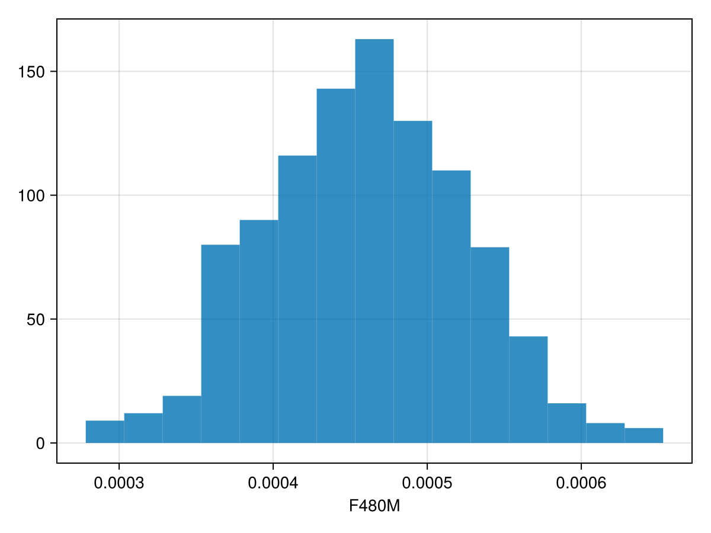
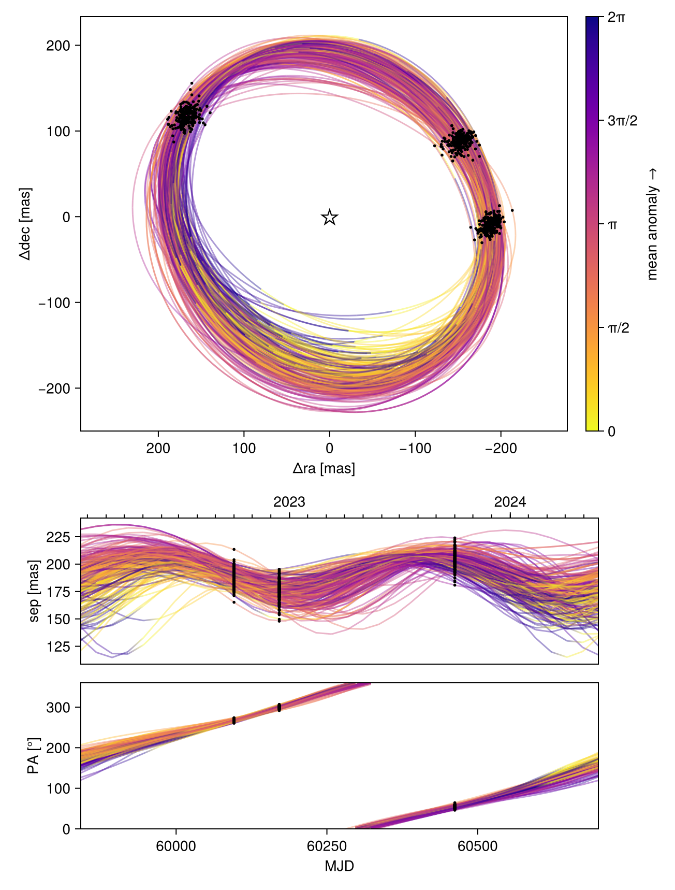
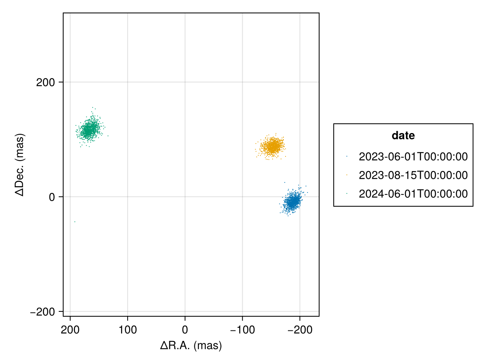
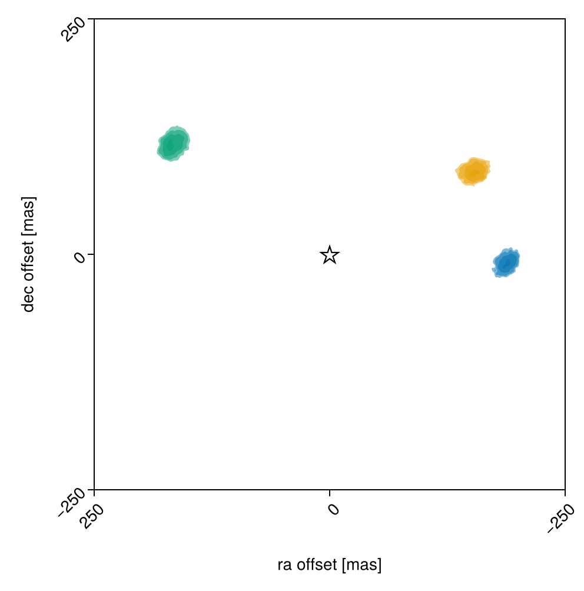
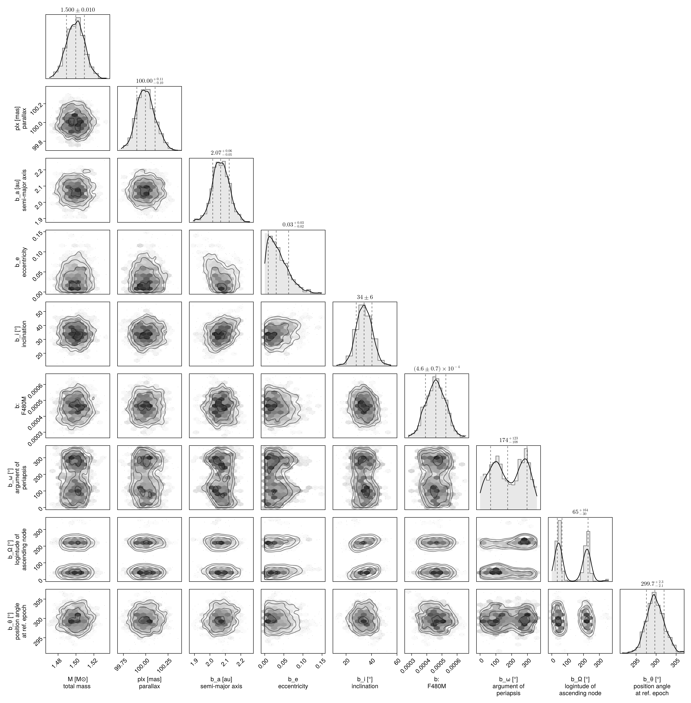

Fitting Interferometric Observables
In this tutorial, we fit a planet & orbit model to a sequence of interferometric observations. Closure phases and squared visibilities are supported.
We load the observations in OI-FITS format and model them as a point source orbiting a star.
Interferometer modelling is supported in Octofitter via the extension package OctofitterInterferometry. To install it, run pkg> add http://github.com/sefffal/Octofitter.jl:OctofitterInterferometry
using Octofitter
using OctofitterInterferometry
using Distributions
using CairoMakie
using PairPlots┌ Warning: Module Octofitter with build ID ffffffff-ffff-ffff-0000-003ffed2038e is missing from the cache.
│ This may mean Octofitter [daf3887e-d01a-44a1-9d7e-98f15c5d69c9] does not support precompilation but is imported by a module that does.
└ @ Base loading.jl:1948Download simulated JWST AMI observations from our examples folder on GitHub:
download("https://github.com/sefffal/Octofitter.jl/raw/main/examples/AMI_data/Sim_data_2023_1_.oifits", "Sim_data_2023_1_.oifits")
download("https://github.com/sefffal/Octofitter.jl/raw/main/examples/AMI_data/Sim_data_2023_2_.oifits", "Sim_data_2023_2_.oifits")
download("https://github.com/sefffal/Octofitter.jl/raw/main/examples/AMI_data/Sim_data_2024_1_.oifits", "Sim_data_2024_1_.oifits")"Sim_data_2024_1_.oifits"Create the likelihood object:
vis_like = InterferometryLikelihood(
(; filename="Sim_data_2023_1_.oifits", epoch=mjd("2023-06-01"), band=:F480M, use_vis2=false),
(; filename="Sim_data_2023_2_.oifits", epoch=mjd("2023-08-15"), band=:F480M, use_vis2=false),
(; filename="Sim_data_2024_1_.oifits", epoch=mjd("2024-06-01"), band=:F480M, use_vis2=false),
)OctofitterInterferometry.InterferometryLikelihood Table with 14 columns and 3 rows:
filename epoch band use_vis2 u ⋯
┌────────────────────────────────────────────────────────────────────────
1 │ Sim_data_2023_1_.oi… 60096.0 F480M false [-3.46641e5; 6.7596… ⋯
2 │ Sim_data_2023_2_.oi… 60171.0 F480M false [-3.46641e5; 6.7596… ⋯
3 │ Sim_data_2024_1_.oi… 60462.0 F480M false [-3.46641e5; 6.7596… ⋯Plot the closure phases:
fig = Makie.Figure()
ax = Axis(
fig[1,1],
xlabel="index",
ylabel="closure phase",
)
Makie.stem!(
vis_like.table.cps_data[1][:],
label="epoch 1",
)
Makie.stem!(
vis_like.table.cps_data[2][:],
label="epoch 2"
)
Makie.stem!(
vis_like.table.cps_data[3][:],
label="epoch 3"
)
Makie.Legend(fig[1,2], ax)
fig@planet b Visual{KepOrbit} begin
a ~ truncated(Normal(2,0.1), lower=0)
e ~ truncated(Normal(0, 0.05),lower=0, upper=1.0)
i ~ Sine()
ω ~ UniformCircular()
Ω ~ UniformCircular()
# Our prior on the planet's photometry
# 0 +- 10% of stars brightness (assuming this is unit of data files)
F480M ~ truncated(Normal(0, 0.1),lower=0)
θ ~ UniformCircular()
tp = θ_at_epoch_to_tperi(system,b,60171) # reference epoch for θ. Choose an MJD date near your data.
end
@system Tutoria begin
M ~ truncated(Normal(1.5, 0.01), lower=0)
plx ~ truncated(Normal(100., 0.1), lower=0)
end vis_like bSystem model Tutoria
Derived:
Priors:
M Truncated(Distributions.Normal{Float64}(μ=1.5, σ=0.01); lower=0.0)
plx Truncated(Distributions.Normal{Float64}(μ=100.0, σ=0.1); lower=0.0)
Planet b
Derived:
ω, Ω, θ, tp,
Priors:
a Truncated(Distributions.Normal{Float64}(μ=2.0, σ=0.1); lower=0.0)
e Truncated(Distributions.Normal{Float64}(μ=0.0, σ=0.05); lower=0.0, upper=1.0)
i Sine()
ωy Distributions.Normal{Float64}(μ=0.0, σ=1.0)
ωx Distributions.Normal{Float64}(μ=0.0, σ=1.0)
Ωy Distributions.Normal{Float64}(μ=0.0, σ=1.0)
Ωx Distributions.Normal{Float64}(μ=0.0, σ=1.0)
F480M Truncated(Distributions.Normal{Float64}(μ=0.0, σ=0.1); lower=0.0)
θy Distributions.Normal{Float64}(μ=0.0, σ=1.0)
θx Distributions.Normal{Float64}(μ=0.0, σ=1.0)
Octofitter.UnitLengthPrior{:ωy, :ωx}: √(ωy^2+ωx^2) ~ LogNormal(log(1), 0.02)
Octofitter.UnitLengthPrior{:Ωy, :Ωx}: √(Ωy^2+Ωx^2) ~ LogNormal(log(1), 0.02)
Octofitter.UnitLengthPrior{:θy, :θx}: √(θy^2+θx^2) ~ LogNormal(log(1), 0.02)
OctofitterInterferometry.InterferometryLikelihood Table with 14 columns and 3 rows:
filename epoch band use_vis2 u ⋯
┌────────────────────────────────────────────────────────────────────────
1 │ Sim_data_2023_1_.oi… 60096.0 F480M false [-3.46641e5; 6.7596… ⋯
2 │ Sim_data_2023_2_.oi… 60171.0 F480M false [-3.46641e5; 6.7596… ⋯
3 │ Sim_data_2024_1_.oi… 60462.0 F480M false [-3.46641e5; 6.7596… ⋯
Create the model object and run octofit_pigeons:
model = Octofitter.LogDensityModel(Tutoria)
using Pigeons
results,pt = octofit_pigeons(model, n_rounds=10);┌ Info: Determining initial positions using pathfinder
└ chain_no = 1
┌ Info: Determining initial positions using pathfinder
└ chain_no = 2
┌ Info: Determining initial positions using pathfinder
└ chain_no = 3
┌ Info: Determining initial positions using pathfinder
└ chain_no = 4
┌ Info: Determining initial positions using pathfinder
└ chain_no = 5
┌ Info: Determining initial positions using pathfinder
└ chain_no = 6
┌ Info: Determining initial positions using pathfinder
└ chain_no = 7
┌ Info: Determining initial positions using pathfinder
└ chain_no = 8
┌ Info: Determining initial positions using pathfinder
└ chain_no = 9
┌ Info: Determining initial positions using pathfinder
└ chain_no = 10
┌ Info: Determining initial positions using pathfinder
└ chain_no = 11
┌ Info: Determining initial positions using pathfinder
└ chain_no = 12
┌ Info: Determining initial positions using pathfinder
└ chain_no = 13
┌ Info: Determining initial positions using pathfinder
└ chain_no = 14
┌ Error: Unexpected error occured running pathfinder
│ exception =
│ AssertionError: isfinite(phi_d) && isfinite(gphi)
│ Stacktrace:
│ [1] bisect!(ϕdϕ::LineSearches.var"#ϕdϕ#6"{Optim.ManifoldObjective{NLSolversBase.TwiceDifferentiable{Float64, Vector{Float64}, Matrix{Float64}, Vector{Float64}}}, Vector{Float64}, Vector{Float64}, Vector{Float64}}, alphas::Vector{Float64}, values::Vector{Float64}, slopes::Vector{Float64}, ia::Int64, ib::Int64, phi_lim::Float64, display::Int64)
│ @ LineSearches ~/.julia/packages/LineSearches/G1LRk/src/hagerzhang.jl:503
│ [2] (::LineSearches.HagerZhang{Float64, Base.RefValue{Bool}})(ϕ::Function, ϕdϕ::LineSearches.var"#ϕdϕ#6"{Optim.ManifoldObjective{NLSolversBase.TwiceDifferentiable{Float64, Vector{Float64}, Matrix{Float64}, Vector{Float64}}}, Vector{Float64}, Vector{Float64}, Vector{Float64}}, c::Float64, phi_0::Float64, dphi_0::Float64)
│ @ LineSearches ~/.julia/packages/LineSearches/G1LRk/src/hagerzhang.jl:201
│ [3] HagerZhang
│ @ ~/.julia/packages/LineSearches/G1LRk/src/hagerzhang.jl:101 [inlined]
│ [4] perform_linesearch!(state::Optim.LBFGSState{Vector{Float64}, Vector{Vector{Float64}}, Vector{Vector{Float64}}, Float64, Vector{Float64}}, method::Optim.LBFGS{Nothing, LineSearches.InitialHagerZhang{Float64}, LineSearches.HagerZhang{Float64, Base.RefValue{Bool}}, Optim.var"#20#22"}, d::Optim.ManifoldObjective{NLSolversBase.TwiceDifferentiable{Float64, Vector{Float64}, Matrix{Float64}, Vector{Float64}}})
│ @ Optim ~/.julia/packages/Optim/ZhuZN/src/utilities/perform_linesearch.jl:58
│ [5] update_state!(d::NLSolversBase.TwiceDifferentiable{Float64, Vector{Float64}, Matrix{Float64}, Vector{Float64}}, state::Optim.LBFGSState{Vector{Float64}, Vector{Vector{Float64}}, Vector{Vector{Float64}}, Float64, Vector{Float64}}, method::Optim.LBFGS{Nothing, LineSearches.InitialHagerZhang{Float64}, LineSearches.HagerZhang{Float64, Base.RefValue{Bool}}, Optim.var"#20#22"})
│ @ Optim ~/.julia/packages/Optim/ZhuZN/src/multivariate/solvers/first_order/l_bfgs.jl:204
│ [6] optimize(d::NLSolversBase.TwiceDifferentiable{Float64, Vector{Float64}, Matrix{Float64}, Vector{Float64}}, initial_x::Vector{Float64}, method::Optim.LBFGS{Nothing, LineSearches.InitialHagerZhang{Float64}, LineSearches.HagerZhang{Float64, Base.RefValue{Bool}}, Optim.var"#20#22"}, options::Optim.Options{Float64, OptimizationOptimJL.var"#_cb#12"{OptimizationBase.OptimizationCache{SciMLBase.OptimizationFunction{true, SciMLBase.NoAD, Pathfinder.var"#f#5"{Octofitter.LogDensityModelAny}, OptimizationBase.var"#23#30"{SciMLBase.OptimizationFunction{true, SciMLBase.NoAD, Pathfinder.var"#f#5"{Octofitter.LogDensityModelAny}, Pathfinder.var"#grad#6"{Octofitter.LogDensityModelAny}, Pathfinder.var"#hess#7"{Octofitter.LogDensityModelAny}, Nothing, Nothing, Nothing, Nothing, Nothing, Nothing, Nothing, Nothing, Nothing, typeof(SciMLBase.DEFAULT_OBSERVED_NO_TIME), Nothing, Nothing, Nothing, Nothing, Nothing, Nothing, Nothing, Nothing, Nothing}, OptimizationBase.ReInitCache{Vector{Float64}, Nothing}}, OptimizationBase.var"#24#31"{SciMLBase.OptimizationFunction{true, SciMLBase.NoAD, Pathfinder.var"#f#5"{Octofitter.LogDensityModelAny}, Pathfinder.var"#grad#6"{Octofitter.LogDensityModelAny}, Pathfinder.var"#hess#7"{Octofitter.LogDensityModelAny}, Nothing, Nothing, Nothing, Nothing, Nothing, Nothing, Nothing, Nothing, Nothing, typeof(SciMLBase.DEFAULT_OBSERVED_NO_TIME), Nothing, Nothing, Nothing, Nothing, Nothing, Nothing, Nothing, Nothing, Nothing}, OptimizationBase.ReInitCache{Vector{Float64}, Nothing}}, Nothing, Nothing, Nothing, Nothing, Nothing, Nothing, Nothing, Nothing, Nothing, typeof(SciMLBase.DEFAULT_OBSERVED_NO_TIME), Nothing, Nothing, Nothing, Nothing, Nothing, Nothing, Nothing, Nothing, Nothing}, OptimizationBase.ReInitCache{Vector{Float64}, Nothing}, Nothing, Nothing, Nothing, Nothing, Nothing, Optim.LBFGS{Nothing, LineSearches.InitialHagerZhang{Float64}, LineSearches.HagerZhang{Float64, Base.RefValue{Bool}}, Optim.var"#20#22"}, Base.Iterators.Cycle{Tuple{OptimizationBase.NullData}}, Bool, Pathfinder.OptimizationCallback{Vector{Vector{Float64}}, Vector{Float64}, Vector{Vector{Float64}}, Pathfinder.var"#∇f#9"{SciMLBase.OptimizationFunction{true, SciMLBase.NoAD, Pathfinder.var"#f#5"{Octofitter.LogDensityModelAny}, Pathfinder.var"#grad#6"{Octofitter.LogDensityModelAny}, Pathfinder.var"#hess#7"{Octofitter.LogDensityModelAny}, Nothing, Nothing, Nothing, Nothing, Nothing, Nothing, Nothing, Nothing, Nothing, typeof(SciMLBase.DEFAULT_OBSERVED_NO_TIME), Nothing, Nothing, Nothing, Nothing, Nothing, Nothing, Nothing, Nothing, Nothing}}, Base.UUID, Nothing}, Nothing}}}, state::Optim.LBFGSState{Vector{Float64}, Vector{Vector{Float64}}, Vector{Vector{Float64}}, Float64, Vector{Float64}})
│ @ Optim ~/.julia/packages/Optim/ZhuZN/src/multivariate/optimize/optimize.jl:54
│ [7] optimize(d::NLSolversBase.TwiceDifferentiable{Float64, Vector{Float64}, Matrix{Float64}, Vector{Float64}}, initial_x::Vector{Float64}, method::Optim.LBFGS{Nothing, LineSearches.InitialHagerZhang{Float64}, LineSearches.HagerZhang{Float64, Base.RefValue{Bool}}, Optim.var"#20#22"}, options::Optim.Options{Float64, OptimizationOptimJL.var"#_cb#12"{OptimizationBase.OptimizationCache{SciMLBase.OptimizationFunction{true, SciMLBase.NoAD, Pathfinder.var"#f#5"{Octofitter.LogDensityModelAny}, OptimizationBase.var"#23#30"{SciMLBase.OptimizationFunction{true, SciMLBase.NoAD, Pathfinder.var"#f#5"{Octofitter.LogDensityModelAny}, Pathfinder.var"#grad#6"{Octofitter.LogDensityModelAny}, Pathfinder.var"#hess#7"{Octofitter.LogDensityModelAny}, Nothing, Nothing, Nothing, Nothing, Nothing, Nothing, Nothing, Nothing, Nothing, typeof(SciMLBase.DEFAULT_OBSERVED_NO_TIME), Nothing, Nothing, Nothing, Nothing, Nothing, Nothing, Nothing, Nothing, Nothing}, OptimizationBase.ReInitCache{Vector{Float64}, Nothing}}, OptimizationBase.var"#24#31"{SciMLBase.OptimizationFunction{true, SciMLBase.NoAD, Pathfinder.var"#f#5"{Octofitter.LogDensityModelAny}, Pathfinder.var"#grad#6"{Octofitter.LogDensityModelAny}, Pathfinder.var"#hess#7"{Octofitter.LogDensityModelAny}, Nothing, Nothing, Nothing, Nothing, Nothing, Nothing, Nothing, Nothing, Nothing, typeof(SciMLBase.DEFAULT_OBSERVED_NO_TIME), Nothing, Nothing, Nothing, Nothing, Nothing, Nothing, Nothing, Nothing, Nothing}, OptimizationBase.ReInitCache{Vector{Float64}, Nothing}}, Nothing, Nothing, Nothing, Nothing, Nothing, Nothing, Nothing, Nothing, Nothing, typeof(SciMLBase.DEFAULT_OBSERVED_NO_TIME), Nothing, Nothing, Nothing, Nothing, Nothing, Nothing, Nothing, Nothing, Nothing}, OptimizationBase.ReInitCache{Vector{Float64}, Nothing}, Nothing, Nothing, Nothing, Nothing, Nothing, Optim.LBFGS{Nothing, LineSearches.InitialHagerZhang{Float64}, LineSearches.HagerZhang{Float64, Base.RefValue{Bool}}, Optim.var"#20#22"}, Base.Iterators.Cycle{Tuple{OptimizationBase.NullData}}, Bool, Pathfinder.OptimizationCallback{Vector{Vector{Float64}}, Vector{Float64}, Vector{Vector{Float64}}, Pathfinder.var"#∇f#9"{SciMLBase.OptimizationFunction{true, SciMLBase.NoAD, Pathfinder.var"#f#5"{Octofitter.LogDensityModelAny}, Pathfinder.var"#grad#6"{Octofitter.LogDensityModelAny}, Pathfinder.var"#hess#7"{Octofitter.LogDensityModelAny}, Nothing, Nothing, Nothing, Nothing, Nothing, Nothing, Nothing, Nothing, Nothing, typeof(SciMLBase.DEFAULT_OBSERVED_NO_TIME), Nothing, Nothing, Nothing, Nothing, Nothing, Nothing, Nothing, Nothing, Nothing}}, Base.UUID, Nothing}, Nothing}}})
│ @ Optim ~/.julia/packages/Optim/ZhuZN/src/multivariate/optimize/optimize.jl:36
│ [8] __solve(cache::OptimizationBase.OptimizationCache{SciMLBase.OptimizationFunction{true, SciMLBase.NoAD, Pathfinder.var"#f#5"{Octofitter.LogDensityModelAny}, OptimizationBase.var"#23#30"{SciMLBase.OptimizationFunction{true, SciMLBase.NoAD, Pathfinder.var"#f#5"{Octofitter.LogDensityModelAny}, Pathfinder.var"#grad#6"{Octofitter.LogDensityModelAny}, Pathfinder.var"#hess#7"{Octofitter.LogDensityModelAny}, Nothing, Nothing, Nothing, Nothing, Nothing, Nothing, Nothing, Nothing, Nothing, typeof(SciMLBase.DEFAULT_OBSERVED_NO_TIME), Nothing, Nothing, Nothing, Nothing, Nothing, Nothing, Nothing, Nothing, Nothing}, OptimizationBase.ReInitCache{Vector{Float64}, Nothing}}, OptimizationBase.var"#24#31"{SciMLBase.OptimizationFunction{true, SciMLBase.NoAD, Pathfinder.var"#f#5"{Octofitter.LogDensityModelAny}, Pathfinder.var"#grad#6"{Octofitter.LogDensityModelAny}, Pathfinder.var"#hess#7"{Octofitter.LogDensityModelAny}, Nothing, Nothing, Nothing, Nothing, Nothing, Nothing, Nothing, Nothing, Nothing, typeof(SciMLBase.DEFAULT_OBSERVED_NO_TIME), Nothing, Nothing, Nothing, Nothing, Nothing, Nothing, Nothing, Nothing, Nothing}, OptimizationBase.ReInitCache{Vector{Float64}, Nothing}}, Nothing, Nothing, Nothing, Nothing, Nothing, Nothing, Nothing, Nothing, Nothing, typeof(SciMLBase.DEFAULT_OBSERVED_NO_TIME), Nothing, Nothing, Nothing, Nothing, Nothing, Nothing, Nothing, Nothing, Nothing}, OptimizationBase.ReInitCache{Vector{Float64}, Nothing}, Nothing, Nothing, Nothing, Nothing, Nothing, Optim.LBFGS{Nothing, LineSearches.InitialHagerZhang{Float64}, LineSearches.HagerZhang{Float64, Base.RefValue{Bool}}, Optim.var"#20#22"}, Base.Iterators.Cycle{Tuple{OptimizationBase.NullData}}, Bool, Pathfinder.OptimizationCallback{Vector{Vector{Float64}}, Vector{Float64}, Vector{Vector{Float64}}, Pathfinder.var"#∇f#9"{SciMLBase.OptimizationFunction{true, SciMLBase.NoAD, Pathfinder.var"#f#5"{Octofitter.LogDensityModelAny}, Pathfinder.var"#grad#6"{Octofitter.LogDensityModelAny}, Pathfinder.var"#hess#7"{Octofitter.LogDensityModelAny}, Nothing, Nothing, Nothing, Nothing, Nothing, Nothing, Nothing, Nothing, Nothing, typeof(SciMLBase.DEFAULT_OBSERVED_NO_TIME), Nothing, Nothing, Nothing, Nothing, Nothing, Nothing, Nothing, Nothing, Nothing}}, Base.UUID, Nothing}, Nothing})
│ @ OptimizationOptimJL ~/.julia/packages/OptimizationOptimJL/hDX5k/src/OptimizationOptimJL.jl:224
│ [9] solve!
│ @ ~/.julia/packages/SciMLBase/rR75x/src/solve.jl:188 [inlined]
│ [10] #solve#627
│ @ ~/.julia/packages/SciMLBase/rR75x/src/solve.jl:96 [inlined]
│ [11] optimize_with_trace(prob::SciMLBase.OptimizationProblem{true, SciMLBase.OptimizationFunction{true, SciMLBase.NoAD, Pathfinder.var"#f#5"{Octofitter.LogDensityModelAny}, Pathfinder.var"#grad#6"{Octofitter.LogDensityModelAny}, Pathfinder.var"#hess#7"{Octofitter.LogDensityModelAny}, Nothing, Nothing, Nothing, Nothing, Nothing, Nothing, Nothing, Nothing, Nothing, typeof(SciMLBase.DEFAULT_OBSERVED_NO_TIME), Nothing, Nothing, Nothing, Nothing, Nothing, Nothing, Nothing, Nothing, Nothing}, Vector{Float64}, Nothing, Nothing, Nothing, Nothing, Nothing, Nothing, Nothing, @Kwargs{}}, optimizer::Optim.LBFGS{Nothing, LineSearches.InitialHagerZhang{Float64}, LineSearches.HagerZhang{Float64, Base.RefValue{Bool}}, Optim.var"#20#22"}; progress_name::String, progress_id::Base.UUID, maxiters::Int64, callback::Nothing, fail_on_nonfinite::Bool, kwargs::@Kwargs{progress::Bool, reltol::Float64})
│ @ Pathfinder ~/.julia/packages/Pathfinder/OduAC/src/optimize.jl:46
│ [12] optimize_with_trace
│ @ ~/.julia/packages/Pathfinder/OduAC/src/optimize.jl:20 [inlined]
│ [13] _pathfinder(rng::SplittableRandoms.SplittableRandom, prob::SciMLBase.OptimizationProblem{true, SciMLBase.OptimizationFunction{true, SciMLBase.NoAD, Pathfinder.var"#f#5"{Octofitter.LogDensityModelAny}, Pathfinder.var"#grad#6"{Octofitter.LogDensityModelAny}, Pathfinder.var"#hess#7"{Octofitter.LogDensityModelAny}, Nothing, Nothing, Nothing, Nothing, Nothing, Nothing, Nothing, Nothing, Nothing, typeof(SciMLBase.DEFAULT_OBSERVED_NO_TIME), Nothing, Nothing, Nothing, Nothing, Nothing, Nothing, Nothing, Nothing, Nothing}, Vector{Float64}, Nothing, Nothing, Nothing, Nothing, Nothing, Nothing, Nothing, @Kwargs{}}, logp::Pathfinder.var"#logp#23"{SciMLBase.OptimizationProblem{true, SciMLBase.OptimizationFunction{true, SciMLBase.NoAD, Pathfinder.var"#f#5"{Octofitter.LogDensityModelAny}, Pathfinder.var"#grad#6"{Octofitter.LogDensityModelAny}, Pathfinder.var"#hess#7"{Octofitter.LogDensityModelAny}, Nothing, Nothing, Nothing, Nothing, Nothing, Nothing, Nothing, Nothing, Nothing, typeof(SciMLBase.DEFAULT_OBSERVED_NO_TIME), Nothing, Nothing, Nothing, Nothing, Nothing, Nothing, Nothing, Nothing, Nothing}, Vector{Float64}, Nothing, Nothing, Nothing, Nothing, Nothing, Nothing, Nothing, @Kwargs{}}}; history_length::Int64, optimizer::Optim.LBFGS{Nothing, LineSearches.InitialHagerZhang{Float64}, LineSearches.HagerZhang{Float64, Base.RefValue{Bool}}, Optim.var"#20#22"}, ndraws_elbo::Int64, executor::Transducers.SequentialEx{@NamedTuple{}}, kwargs::@Kwargs{progress_name::String, progress_id::Base.UUID, progress::Bool, maxiters::Int64, reltol::Float64})
│ @ Pathfinder ~/.julia/packages/Pathfinder/OduAC/src/singlepath.jl:288
│ [14] _pathfinder
│ @ ~/.julia/packages/Pathfinder/OduAC/src/singlepath.jl:277 [inlined]
│ [15] _pathfinder_try_until_succeed(rng::SplittableRandoms.SplittableRandom, prob::SciMLBase.OptimizationProblem{true, SciMLBase.OptimizationFunction{true, SciMLBase.NoAD, Pathfinder.var"#f#5"{Octofitter.LogDensityModelAny}, Pathfinder.var"#grad#6"{Octofitter.LogDensityModelAny}, Pathfinder.var"#hess#7"{Octofitter.LogDensityModelAny}, Nothing, Nothing, Nothing, Nothing, Nothing, Nothing, Nothing, Nothing, Nothing, typeof(SciMLBase.DEFAULT_OBSERVED_NO_TIME), Nothing, Nothing, Nothing, Nothing, Nothing, Nothing, Nothing, Nothing, Nothing}, Vector{Float64}, Nothing, Nothing, Nothing, Nothing, Nothing, Nothing, Nothing, @Kwargs{}}, logp::Pathfinder.var"#logp#23"{SciMLBase.OptimizationProblem{true, SciMLBase.OptimizationFunction{true, SciMLBase.NoAD, Pathfinder.var"#f#5"{Octofitter.LogDensityModelAny}, Pathfinder.var"#grad#6"{Octofitter.LogDensityModelAny}, Pathfinder.var"#hess#7"{Octofitter.LogDensityModelAny}, Nothing, Nothing, Nothing, Nothing, Nothing, Nothing, Nothing, Nothing, Nothing, typeof(SciMLBase.DEFAULT_OBSERVED_NO_TIME), Nothing, Nothing, Nothing, Nothing, Nothing, Nothing, Nothing, Nothing, Nothing}, Vector{Float64}, Nothing, Nothing, Nothing, Nothing, Nothing, Nothing, Nothing, @Kwargs{}}}; ntries::Int64, init_scale::Int64, init_sampler::Octofitter.CallableAny, allow_mutating_init::Bool, kwargs::@Kwargs{history_length::Int64, optimizer::Optim.LBFGS{Nothing, LineSearches.InitialHagerZhang{Float64}, LineSearches.HagerZhang{Float64, Base.RefValue{Bool}}, Optim.var"#20#22"}, progress_id::Base.UUID, ndraws_elbo::Int64, progress::Bool, maxiters::Int64, reltol::Float64})
│ @ Pathfinder ~/.julia/packages/Pathfinder/OduAC/src/singlepath.jl:263
│ [16] _pathfinder_try_until_succeed
│ @ ~/.julia/packages/Pathfinder/OduAC/src/singlepath.jl:251 [inlined]
│ [17] #22
│ @ ~/.julia/packages/Pathfinder/OduAC/src/singlepath.jl:180 [inlined]
│ [18] progress(f::Pathfinder.var"#22#24"{SplittableRandoms.SplittableRandom, Int64, Optim.LBFGS{Nothing, LineSearches.InitialHagerZhang{Float64}, LineSearches.HagerZhang{Float64, Base.RefValue{Bool}}, Optim.var"#20#22"}, Int64, @Kwargs{init_sampler::Octofitter.CallableAny, allow_mutating_init::Bool, progress::Bool, maxiters::Int64, reltol::Float64}, SciMLBase.OptimizationProblem{true, SciMLBase.OptimizationFunction{true, SciMLBase.NoAD, Pathfinder.var"#f#5"{Octofitter.LogDensityModelAny}, Pathfinder.var"#grad#6"{Octofitter.LogDensityModelAny}, Pathfinder.var"#hess#7"{Octofitter.LogDensityModelAny}, Nothing, Nothing, Nothing, Nothing, Nothing, Nothing, Nothing, Nothing, Nothing, typeof(SciMLBase.DEFAULT_OBSERVED_NO_TIME), Nothing, Nothing, Nothing, Nothing, Nothing, Nothing, Nothing, Nothing, Nothing}, Vector{Float64}, Nothing, Nothing, Nothing, Nothing, Nothing, Nothing, Nothing, @Kwargs{}}, Pathfinder.var"#logp#23"{SciMLBase.OptimizationProblem{true, SciMLBase.OptimizationFunction{true, SciMLBase.NoAD, Pathfinder.var"#f#5"{Octofitter.LogDensityModelAny}, Pathfinder.var"#grad#6"{Octofitter.LogDensityModelAny}, Pathfinder.var"#hess#7"{Octofitter.LogDensityModelAny}, Nothing, Nothing, Nothing, Nothing, Nothing, Nothing, Nothing, Nothing, Nothing, typeof(SciMLBase.DEFAULT_OBSERVED_NO_TIME), Nothing, Nothing, Nothing, Nothing, Nothing, Nothing, Nothing, Nothing, Nothing}, Vector{Float64}, Nothing, Nothing, Nothing, Nothing, Nothing, Nothing, Nothing, @Kwargs{}}}}; name::String)
│ @ ProgressLogging ~/.julia/packages/ProgressLogging/6KXlp/src/ProgressLogging.jl:262
│ [19] progress
│ @ ~/.julia/packages/ProgressLogging/6KXlp/src/ProgressLogging.jl:258 [inlined]
│ [20] pathfinder(prob::SciMLBase.OptimizationProblem{true, SciMLBase.OptimizationFunction{true, SciMLBase.NoAD, Pathfinder.var"#f#5"{Octofitter.LogDensityModelAny}, Pathfinder.var"#grad#6"{Octofitter.LogDensityModelAny}, Pathfinder.var"#hess#7"{Octofitter.LogDensityModelAny}, Nothing, Nothing, Nothing, Nothing, Nothing, Nothing, Nothing, Nothing, Nothing, typeof(SciMLBase.DEFAULT_OBSERVED_NO_TIME), Nothing, Nothing, Nothing, Nothing, Nothing, Nothing, Nothing, Nothing, Nothing}, Vector{Float64}, Nothing, Nothing, Nothing, Nothing, Nothing, Nothing, Nothing, @Kwargs{}}; rng::SplittableRandoms.SplittableRandom, history_length::Int64, optimizer::Optim.LBFGS{Nothing, LineSearches.InitialHagerZhang{Float64}, LineSearches.HagerZhang{Float64, Base.RefValue{Bool}}, Optim.var"#20#22"}, ndraws_elbo::Int64, ndraws::Int64, input::Octofitter.LogDensityModelAny, kwargs::@Kwargs{init_sampler::Octofitter.CallableAny, allow_mutating_init::Bool, progress::Bool, maxiters::Int64, reltol::Float64})
│ @ Pathfinder ~/.julia/packages/Pathfinder/OduAC/src/singlepath.jl:179
│ [21] pathfinder
│ @ ~/.julia/packages/Pathfinder/OduAC/src/singlepath.jl:165 [inlined]
│ [22] #pathfinder#20
│ @ ~/.julia/packages/Pathfinder/OduAC/src/singlepath.jl:163 [inlined]
│ [23] pathfinder
│ @ ~/.julia/packages/Pathfinder/OduAC/src/singlepath.jl:142 [inlined]
│ [24] pathfinder(ℓ::Octofitter.LogDensityModelAny; input::Octofitter.LogDensityModelAny, kwargs::@Kwargs{init_sampler::Octofitter.CallableAny, progress::Bool, maxiters::Int64, reltol::Float64, rng::SplittableRandoms.SplittableRandom})
│ @ Pathfinder ~/.julia/packages/Pathfinder/OduAC/src/singlepath.jl:140
│ [25] pathfinder
│ @ ~/.julia/packages/Pathfinder/OduAC/src/singlepath.jl:136 [inlined]
│ [26] (::OctofitterPigeonsExt.var"#3#6"{SplittableRandoms.SplittableRandom, Octofitter.LogDensityModelAny, Int64, OctofitterPigeonsExt.var"#2#5"{Octofitter.LogDensityModel{Octofitter.var"#ℓπcallback#61"{System{Priors, Derived, Tuple{OctofitterInterferometry.InterferometryLikelihood{Table{@NamedTuple{filename::String, epoch::Float64, band::Symbol, use_vis2::Bool, u::Matrix{Float64}, v::Matrix{Float64}, eff_wave::Vector{Float64}, cps_data::Matrix{Float64}, dcps::Matrix{Float64}, vis2_data::Matrix{Float64}, dvis2::Matrix{Float64}, index_cps1::Vector{Int64}, index_cps2::Vector{Int64}, index_cps3::Vector{Int64}}, 1, @NamedTuple{filename::Vector{String}, epoch::Vector{Float64}, band::Vector{Symbol}, use_vis2::Vector{Bool}, u::Vector{Matrix{Float64}}, v::Vector{Matrix{Float64}}, eff_wave::Vector{Vector{Float64}}, cps_data::Vector{Matrix{Float64}}, dcps::Vector{Matrix{Float64}}, vis2_data::Vector{Matrix{Float64}}, dvis2::Vector{Matrix{Float64}}, index_cps1::Vector{Vector{Int64}}, index_cps2::Vector{Vector{Int64}}, index_cps3::Vector{Vector{Int64}}}}}}, @NamedTuple{b::Planet{Visual{KepOrbit}, Priors, Derived, Tuple{Octofitter.UnitLengthPrior{:ωy, :ωx}, Octofitter.UnitLengthPrior{:Ωy, :Ωx}, Octofitter.UnitLengthPrior{:θy, :θx}}}}}, RuntimeGeneratedFunctions.RuntimeGeneratedFunction{(:arr,), Octofitter.var"#_RGF_ModTag", Octofitter.var"#_RGF_ModTag", (0x0b47bdb7, 0x99b43c97, 0x669a4df1, 0xe4f3d536, 0xe6b1d6fa), Expr}, RuntimeGeneratedFunctions.RuntimeGeneratedFunction{(:arr,), Octofitter.var"#_RGF_ModTag", Octofitter.var"#_RGF_ModTag", (0x4d42a813, 0xcaaf8f7e, 0xac9d83df, 0x4f8e0fcd, 0x9fe2040a), Expr}, RuntimeGeneratedFunctions.RuntimeGeneratedFunction{(:arr,), Octofitter.var"#_RGF_ModTag", Octofitter.var"#_RGF_ModTag", (0x5528444a, 0x5ff7c78c, 0x4a9df17b, 0x6bff04a0, 0x249f9f79), Expr}, RuntimeGeneratedFunctions.RuntimeGeneratedFunction{(:system, :θ_system), Octofitter.var"#_RGF_ModTag", Octofitter.var"#_RGF_ModTag", (0xa2b64611, 0xb000e850, 0x473951ee, 0xd949d205, 0xc54b05a9), Expr}}, Octofitter.var"#57#69"{ForwardDiff.GradientConfig{ForwardDiff.Tag{Octofitter.var"#ℓπcallback#61"{System{Priors, Derived, Tuple{OctofitterInterferometry.InterferometryLikelihood{Table{@NamedTuple{filename::String, epoch::Float64, band::Symbol, use_vis2::Bool, u::Matrix{Float64}, v::Matrix{Float64}, eff_wave::Vector{Float64}, cps_data::Matrix{Float64}, dcps::Matrix{Float64}, vis2_data::Matrix{Float64}, dvis2::Matrix{Float64}, index_cps1::Vector{Int64}, index_cps2::Vector{Int64}, index_cps3::Vector{Int64}}, 1, @NamedTuple{filename::Vector{String}, epoch::Vector{Float64}, band::Vector{Symbol}, use_vis2::Vector{Bool}, u::Vector{Matrix{Float64}}, v::Vector{Matrix{Float64}}, eff_wave::Vector{Vector{Float64}}, cps_data::Vector{Matrix{Float64}}, dcps::Vector{Matrix{Float64}}, vis2_data::Vector{Matrix{Float64}}, dvis2::Vector{Matrix{Float64}}, index_cps1::Vector{Vector{Int64}}, index_cps2::Vector{Vector{Int64}}, index_cps3::Vector{Vector{Int64}}}}}}, @NamedTuple{b::Planet{Visual{KepOrbit}, Priors, Derived, Tuple{Octofitter.UnitLengthPrior{:ωy, :ωx}, Octofitter.UnitLengthPrior{:Ωy, :Ωx}, Octofitter.UnitLengthPrior{:θy, :θx}}}}}, RuntimeGeneratedFunctions.RuntimeGeneratedFunction{(:arr,), Octofitter.var"#_RGF_ModTag", Octofitter.var"#_RGF_ModTag", (0x0b47bdb7, 0x99b43c97, 0x669a4df1, 0xe4f3d536, 0xe6b1d6fa), Expr}, RuntimeGeneratedFunctions.RuntimeGeneratedFunction{(:arr,), Octofitter.var"#_RGF_ModTag", Octofitter.var"#_RGF_ModTag", (0x4d42a813, 0xcaaf8f7e, 0xac9d83df, 0x4f8e0fcd, 0x9fe2040a), Expr}, RuntimeGeneratedFunctions.RuntimeGeneratedFunction{(:arr,), Octofitter.var"#_RGF_ModTag", Octofitter.var"#_RGF_ModTag", (0x5528444a, 0x5ff7c78c, 0x4a9df17b, 0x6bff04a0, 0x249f9f79), Expr}, RuntimeGeneratedFunctions.RuntimeGeneratedFunction{(:system, :θ_system), Octofitter.var"#_RGF_ModTag", Octofitter.var"#_RGF_ModTag", (0xa2b64611, 0xb000e850, 0x473951ee, 0xd949d205, 0xc54b05a9), Expr}}, Float64}, Float64, 12, Vector{ForwardDiff.Dual{ForwardDiff.Tag{Octofitter.var"#ℓπcallback#61"{System{Priors, Derived, Tuple{OctofitterInterferometry.InterferometryLikelihood{Table{@NamedTuple{filename::String, epoch::Float64, band::Symbol, use_vis2::Bool, u::Matrix{Float64}, v::Matrix{Float64}, eff_wave::Vector{Float64}, cps_data::Matrix{Float64}, dcps::Matrix{Float64}, vis2_data::Matrix{Float64}, dvis2::Matrix{Float64}, index_cps1::Vector{Int64}, index_cps2::Vector{Int64}, index_cps3::Vector{Int64}}, 1, @NamedTuple{filename::Vector{String}, epoch::Vector{Float64}, band::Vector{Symbol}, use_vis2::Vector{Bool}, u::Vector{Matrix{Float64}}, v::Vector{Matrix{Float64}}, eff_wave::Vector{Vector{Float64}}, cps_data::Vector{Matrix{Float64}}, dcps::Vector{Matrix{Float64}}, vis2_data::Vector{Matrix{Float64}}, dvis2::Vector{Matrix{Float64}}, index_cps1::Vector{Vector{Int64}}, index_cps2::Vector{Vector{Int64}}, index_cps3::Vector{Vector{Int64}}}}}}, @NamedTuple{b::Planet{Visual{KepOrbit}, Priors, Derived, Tuple{Octofitter.UnitLengthPrior{:ωy, :ωx}, Octofitter.UnitLengthPrior{:Ωy, :Ωx}, Octofitter.UnitLengthPrior{:θy, :θx}}}}}, RuntimeGeneratedFunctions.RuntimeGeneratedFunction{(:arr,), Octofitter.var"#_RGF_ModTag", Octofitter.var"#_RGF_ModTag", (0x0b47bdb7, 0x99b43c97, 0x669a4df1, 0xe4f3d536, 0xe6b1d6fa), Expr}, RuntimeGeneratedFunctions.RuntimeGeneratedFunction{(:arr,), Octofitter.var"#_RGF_ModTag", Octofitter.var"#_RGF_ModTag", (0x4d42a813, 0xcaaf8f7e, 0xac9d83df, 0x4f8e0fcd, 0x9fe2040a), Expr}, RuntimeGeneratedFunctions.RuntimeGeneratedFunction{(:arr,), Octofitter.var"#_RGF_ModTag", Octofitter.var"#_RGF_ModTag", (0x5528444a, 0x5ff7c78c, 0x4a9df17b, 0x6bff04a0, 0x249f9f79), Expr}, RuntimeGeneratedFunctions.RuntimeGeneratedFunction{(:system, :θ_system), Octofitter.var"#_RGF_ModTag", Octofitter.var"#_RGF_ModTag", (0xa2b64611, 0xb000e850, 0x473951ee, 0xd949d205, 0xc54b05a9), Expr}}, Float64}, Float64, 12}}}, Vector{DiffResults.MutableDiffResult{1, Float64, Tuple{Vector{Float64}}}}, Octofitter.var"#ℓπcallback#61"{System{Priors, Derived, Tuple{OctofitterInterferometry.InterferometryLikelihood{Table{@NamedTuple{filename::String, epoch::Float64, band::Symbol, use_vis2::Bool, u::Matrix{Float64}, v::Matrix{Float64}, eff_wave::Vector{Float64}, cps_data::Matrix{Float64}, dcps::Matrix{Float64}, vis2_data::Matrix{Float64}, dvis2::Matrix{Float64}, index_cps1::Vector{Int64}, index_cps2::Vector{Int64}, index_cps3::Vector{Int64}}, 1, @NamedTuple{filename::Vector{String}, epoch::Vector{Float64}, band::Vector{Symbol}, use_vis2::Vector{Bool}, u::Vector{Matrix{Float64}}, v::Vector{Matrix{Float64}}, eff_wave::Vector{Vector{Float64}}, cps_data::Vector{Matrix{Float64}}, dcps::Vector{Matrix{Float64}}, vis2_data::Vector{Matrix{Float64}}, dvis2::Vector{Matrix{Float64}}, index_cps1::Vector{Vector{Int64}}, index_cps2::Vector{Vector{Int64}}, index_cps3::Vector{Vector{Int64}}}}}}, @NamedTuple{b::Planet{Visual{KepOrbit}, Priors, Derived, Tuple{Octofitter.UnitLengthPrior{:ωy, :ωx}, Octofitter.UnitLengthPrior{:Ωy, :Ωx}, Octofitter.UnitLengthPrior{:θy, :θx}}}}}, RuntimeGeneratedFunctions.RuntimeGeneratedFunction{(:arr,), Octofitter.var"#_RGF_ModTag", Octofitter.var"#_RGF_ModTag", (0x0b47bdb7, 0x99b43c97, 0x669a4df1, 0xe4f3d536, 0xe6b1d6fa), Expr}, RuntimeGeneratedFunctions.RuntimeGeneratedFunction{(:arr,), Octofitter.var"#_RGF_ModTag", Octofitter.var"#_RGF_ModTag", (0x4d42a813, 0xcaaf8f7e, 0xac9d83df, 0x4f8e0fcd, 0x9fe2040a), Expr}, RuntimeGeneratedFunctions.RuntimeGeneratedFunction{(:arr,), Octofitter.var"#_RGF_ModTag", Octofitter.var"#_RGF_ModTag", (0x5528444a, 0x5ff7c78c, 0x4a9df17b, 0x6bff04a0, 0x249f9f79), Expr}, RuntimeGeneratedFunctions.RuntimeGeneratedFunction{(:system, :θ_system), Octofitter.var"#_RGF_ModTag", Octofitter.var"#_RGF_ModTag", (0xa2b64611, 0xb000e850, 0x473951ee, 0xd949d205, 0xc54b05a9), Expr}}}, System{Priors, Derived, Tuple{OctofitterInterferometry.InterferometryLikelihood{Table{@NamedTuple{filename::String, epoch::Float64, band::Symbol, use_vis2::Bool, u::Matrix{Float64}, v::Matrix{Float64}, eff_wave::Vector{Float64}, cps_data::Matrix{Float64}, dcps::Matrix{Float64}, vis2_data::Matrix{Float64}, dvis2::Matrix{Float64}, index_cps1::Vector{Int64}, index_cps2::Vector{Int64}, index_cps3::Vector{Int64}}, 1, @NamedTuple{filename::Vector{String}, epoch::Vector{Float64}, band::Vector{Symbol}, use_vis2::Vector{Bool}, u::Vector{Matrix{Float64}}, v::Vector{Matrix{Float64}}, eff_wave::Vector{Vector{Float64}}, cps_data::Vector{Matrix{Float64}}, dcps::Vector{Matrix{Float64}}, vis2_data::Vector{Matrix{Float64}}, dvis2::Vector{Matrix{Float64}}, index_cps1::Vector{Vector{Int64}}, index_cps2::Vector{Vector{Int64}}, index_cps3::Vector{Vector{Int64}}}}}}, @NamedTuple{b::Planet{Visual{KepOrbit}, Priors, Derived, Tuple{Octofitter.UnitLengthPrior{:ωy, :ωx}, Octofitter.UnitLengthPrior{:Ωy, :Ωx}, Octofitter.UnitLengthPrior{:θy, :θx}}}}}, Octofitter.var"#49#60"{Vector{Distributions.Distribution{Distributions.Univariate, Distributions.Continuous}}}, RuntimeGeneratedFunctions.RuntimeGeneratedFunction{(:arr,), Octofitter.var"#_RGF_ModTag", Octofitter.var"#_RGF_ModTag", (0x4d42a813, 0xcaaf8f7e, 0xac9d83df, 0x4f8e0fcd, 0x9fe2040a), Expr}, RuntimeGeneratedFunctions.RuntimeGeneratedFunction{(:arr,), Octofitter.var"#_RGF_ModTag", Octofitter.var"#_RGF_ModTag", (0x0b47bdb7, 0x99b43c97, 0x669a4df1, 0xe4f3d536, 0xe6b1d6fa), Expr}}, Int64}})()
│ @ OctofitterPigeonsExt ~/work/Octofitter.jl/Octofitter.jl/ext/OctofitterPigeonsExt/OctofitterPigeonsExt.jl:51
│ [27] with_logstate(f::Function, logstate::Any)
│ @ Base.CoreLogging ./logging.jl:515
│ [28] with_logger
│ @ ./logging.jl:627 [inlined]
│ [29] initialization(model::Octofitter.LogDensityModel{Octofitter.var"#ℓπcallback#61"{System{Priors, Derived, Tuple{OctofitterInterferometry.InterferometryLikelihood{Table{@NamedTuple{filename::String, epoch::Float64, band::Symbol, use_vis2::Bool, u::Matrix{Float64}, v::Matrix{Float64}, eff_wave::Vector{Float64}, cps_data::Matrix{Float64}, dcps::Matrix{Float64}, vis2_data::Matrix{Float64}, dvis2::Matrix{Float64}, index_cps1::Vector{Int64}, index_cps2::Vector{Int64}, index_cps3::Vector{Int64}}, 1, @NamedTuple{filename::Vector{String}, epoch::Vector{Float64}, band::Vector{Symbol}, use_vis2::Vector{Bool}, u::Vector{Matrix{Float64}}, v::Vector{Matrix{Float64}}, eff_wave::Vector{Vector{Float64}}, cps_data::Vector{Matrix{Float64}}, dcps::Vector{Matrix{Float64}}, vis2_data::Vector{Matrix{Float64}}, dvis2::Vector{Matrix{Float64}}, index_cps1::Vector{Vector{Int64}}, index_cps2::Vector{Vector{Int64}}, index_cps3::Vector{Vector{Int64}}}}}}, @NamedTuple{b::Planet{Visual{KepOrbit}, Priors, Derived, Tuple{Octofitter.UnitLengthPrior{:ωy, :ωx}, Octofitter.UnitLengthPrior{:Ωy, :Ωx}, Octofitter.UnitLengthPrior{:θy, :θx}}}}}, RuntimeGeneratedFunctions.RuntimeGeneratedFunction{(:arr,), Octofitter.var"#_RGF_ModTag", Octofitter.var"#_RGF_ModTag", (0x0b47bdb7, 0x99b43c97, 0x669a4df1, 0xe4f3d536, 0xe6b1d6fa), Expr}, RuntimeGeneratedFunctions.RuntimeGeneratedFunction{(:arr,), Octofitter.var"#_RGF_ModTag", Octofitter.var"#_RGF_ModTag", (0x4d42a813, 0xcaaf8f7e, 0xac9d83df, 0x4f8e0fcd, 0x9fe2040a), Expr}, RuntimeGeneratedFunctions.RuntimeGeneratedFunction{(:arr,), Octofitter.var"#_RGF_ModTag", Octofitter.var"#_RGF_ModTag", (0x5528444a, 0x5ff7c78c, 0x4a9df17b, 0x6bff04a0, 0x249f9f79), Expr}, RuntimeGeneratedFunctions.RuntimeGeneratedFunction{(:system, :θ_system), Octofitter.var"#_RGF_ModTag", Octofitter.var"#_RGF_ModTag", (0xa2b64611, 0xb000e850, 0x473951ee, 0xd949d205, 0xc54b05a9), Expr}}, Octofitter.var"#57#69"{ForwardDiff.GradientConfig{ForwardDiff.Tag{Octofitter.var"#ℓπcallback#61"{System{Priors, Derived, Tuple{OctofitterInterferometry.InterferometryLikelihood{Table{@NamedTuple{filename::String, epoch::Float64, band::Symbol, use_vis2::Bool, u::Matrix{Float64}, v::Matrix{Float64}, eff_wave::Vector{Float64}, cps_data::Matrix{Float64}, dcps::Matrix{Float64}, vis2_data::Matrix{Float64}, dvis2::Matrix{Float64}, index_cps1::Vector{Int64}, index_cps2::Vector{Int64}, index_cps3::Vector{Int64}}, 1, @NamedTuple{filename::Vector{String}, epoch::Vector{Float64}, band::Vector{Symbol}, use_vis2::Vector{Bool}, u::Vector{Matrix{Float64}}, v::Vector{Matrix{Float64}}, eff_wave::Vector{Vector{Float64}}, cps_data::Vector{Matrix{Float64}}, dcps::Vector{Matrix{Float64}}, vis2_data::Vector{Matrix{Float64}}, dvis2::Vector{Matrix{Float64}}, index_cps1::Vector{Vector{Int64}}, index_cps2::Vector{Vector{Int64}}, index_cps3::Vector{Vector{Int64}}}}}}, @NamedTuple{b::Planet{Visual{KepOrbit}, Priors, Derived, Tuple{Octofitter.UnitLengthPrior{:ωy, :ωx}, Octofitter.UnitLengthPrior{:Ωy, :Ωx}, Octofitter.UnitLengthPrior{:θy, :θx}}}}}, RuntimeGeneratedFunctions.RuntimeGeneratedFunction{(:arr,), Octofitter.var"#_RGF_ModTag", Octofitter.var"#_RGF_ModTag", (0x0b47bdb7, 0x99b43c97, 0x669a4df1, 0xe4f3d536, 0xe6b1d6fa), Expr}, RuntimeGeneratedFunctions.RuntimeGeneratedFunction{(:arr,), Octofitter.var"#_RGF_ModTag", Octofitter.var"#_RGF_ModTag", (0x4d42a813, 0xcaaf8f7e, 0xac9d83df, 0x4f8e0fcd, 0x9fe2040a), Expr}, RuntimeGeneratedFunctions.RuntimeGeneratedFunction{(:arr,), Octofitter.var"#_RGF_ModTag", Octofitter.var"#_RGF_ModTag", (0x5528444a, 0x5ff7c78c, 0x4a9df17b, 0x6bff04a0, 0x249f9f79), Expr}, RuntimeGeneratedFunctions.RuntimeGeneratedFunction{(:system, :θ_system), Octofitter.var"#_RGF_ModTag", Octofitter.var"#_RGF_ModTag", (0xa2b64611, 0xb000e850, 0x473951ee, 0xd949d205, 0xc54b05a9), Expr}}, Float64}, Float64, 12, Vector{ForwardDiff.Dual{ForwardDiff.Tag{Octofitter.var"#ℓπcallback#61"{System{Priors, Derived, Tuple{OctofitterInterferometry.InterferometryLikelihood{Table{@NamedTuple{filename::String, epoch::Float64, band::Symbol, use_vis2::Bool, u::Matrix{Float64}, v::Matrix{Float64}, eff_wave::Vector{Float64}, cps_data::Matrix{Float64}, dcps::Matrix{Float64}, vis2_data::Matrix{Float64}, dvis2::Matrix{Float64}, index_cps1::Vector{Int64}, index_cps2::Vector{Int64}, index_cps3::Vector{Int64}}, 1, @NamedTuple{filename::Vector{String}, epoch::Vector{Float64}, band::Vector{Symbol}, use_vis2::Vector{Bool}, u::Vector{Matrix{Float64}}, v::Vector{Matrix{Float64}}, eff_wave::Vector{Vector{Float64}}, cps_data::Vector{Matrix{Float64}}, dcps::Vector{Matrix{Float64}}, vis2_data::Vector{Matrix{Float64}}, dvis2::Vector{Matrix{Float64}}, index_cps1::Vector{Vector{Int64}}, index_cps2::Vector{Vector{Int64}}, index_cps3::Vector{Vector{Int64}}}}}}, @NamedTuple{b::Planet{Visual{KepOrbit}, Priors, Derived, Tuple{Octofitter.UnitLengthPrior{:ωy, :ωx}, Octofitter.UnitLengthPrior{:Ωy, :Ωx}, Octofitter.UnitLengthPrior{:θy, :θx}}}}}, RuntimeGeneratedFunctions.RuntimeGeneratedFunction{(:arr,), Octofitter.var"#_RGF_ModTag", Octofitter.var"#_RGF_ModTag", (0x0b47bdb7, 0x99b43c97, 0x669a4df1, 0xe4f3d536, 0xe6b1d6fa), Expr}, RuntimeGeneratedFunctions.RuntimeGeneratedFunction{(:arr,), Octofitter.var"#_RGF_ModTag", Octofitter.var"#_RGF_ModTag", (0x4d42a813, 0xcaaf8f7e, 0xac9d83df, 0x4f8e0fcd, 0x9fe2040a), Expr}, RuntimeGeneratedFunctions.RuntimeGeneratedFunction{(:arr,), Octofitter.var"#_RGF_ModTag", Octofitter.var"#_RGF_ModTag", (0x5528444a, 0x5ff7c78c, 0x4a9df17b, 0x6bff04a0, 0x249f9f79), Expr}, RuntimeGeneratedFunctions.RuntimeGeneratedFunction{(:system, :θ_system), Octofitter.var"#_RGF_ModTag", Octofitter.var"#_RGF_ModTag", (0xa2b64611, 0xb000e850, 0x473951ee, 0xd949d205, 0xc54b05a9), Expr}}, Float64}, Float64, 12}}}, Vector{DiffResults.MutableDiffResult{1, Float64, Tuple{Vector{Float64}}}}, Octofitter.var"#ℓπcallback#61"{System{Priors, Derived, Tuple{OctofitterInterferometry.InterferometryLikelihood{Table{@NamedTuple{filename::String, epoch::Float64, band::Symbol, use_vis2::Bool, u::Matrix{Float64}, v::Matrix{Float64}, eff_wave::Vector{Float64}, cps_data::Matrix{Float64}, dcps::Matrix{Float64}, vis2_data::Matrix{Float64}, dvis2::Matrix{Float64}, index_cps1::Vector{Int64}, index_cps2::Vector{Int64}, index_cps3::Vector{Int64}}, 1, @NamedTuple{filename::Vector{String}, epoch::Vector{Float64}, band::Vector{Symbol}, use_vis2::Vector{Bool}, u::Vector{Matrix{Float64}}, v::Vector{Matrix{Float64}}, eff_wave::Vector{Vector{Float64}}, cps_data::Vector{Matrix{Float64}}, dcps::Vector{Matrix{Float64}}, vis2_data::Vector{Matrix{Float64}}, dvis2::Vector{Matrix{Float64}}, index_cps1::Vector{Vector{Int64}}, index_cps2::Vector{Vector{Int64}}, index_cps3::Vector{Vector{Int64}}}}}}, @NamedTuple{b::Planet{Visual{KepOrbit}, Priors, Derived, Tuple{Octofitter.UnitLengthPrior{:ωy, :ωx}, Octofitter.UnitLengthPrior{:Ωy, :Ωx}, Octofitter.UnitLengthPrior{:θy, :θx}}}}}, RuntimeGeneratedFunctions.RuntimeGeneratedFunction{(:arr,), Octofitter.var"#_RGF_ModTag", Octofitter.var"#_RGF_ModTag", (0x0b47bdb7, 0x99b43c97, 0x669a4df1, 0xe4f3d536, 0xe6b1d6fa), Expr}, RuntimeGeneratedFunctions.RuntimeGeneratedFunction{(:arr,), Octofitter.var"#_RGF_ModTag", Octofitter.var"#_RGF_ModTag", (0x4d42a813, 0xcaaf8f7e, 0xac9d83df, 0x4f8e0fcd, 0x9fe2040a), Expr}, RuntimeGeneratedFunctions.RuntimeGeneratedFunction{(:arr,), Octofitter.var"#_RGF_ModTag", Octofitter.var"#_RGF_ModTag", (0x5528444a, 0x5ff7c78c, 0x4a9df17b, 0x6bff04a0, 0x249f9f79), Expr}, RuntimeGeneratedFunctions.RuntimeGeneratedFunction{(:system, :θ_system), Octofitter.var"#_RGF_ModTag", Octofitter.var"#_RGF_ModTag", (0xa2b64611, 0xb000e850, 0x473951ee, 0xd949d205, 0xc54b05a9), Expr}}}, System{Priors, Derived, Tuple{OctofitterInterferometry.InterferometryLikelihood{Table{@NamedTuple{filename::String, epoch::Float64, band::Symbol, use_vis2::Bool, u::Matrix{Float64}, v::Matrix{Float64}, eff_wave::Vector{Float64}, cps_data::Matrix{Float64}, dcps::Matrix{Float64}, vis2_data::Matrix{Float64}, dvis2::Matrix{Float64}, index_cps1::Vector{Int64}, index_cps2::Vector{Int64}, index_cps3::Vector{Int64}}, 1, @NamedTuple{filename::Vector{String}, epoch::Vector{Float64}, band::Vector{Symbol}, use_vis2::Vector{Bool}, u::Vector{Matrix{Float64}}, v::Vector{Matrix{Float64}}, eff_wave::Vector{Vector{Float64}}, cps_data::Vector{Matrix{Float64}}, dcps::Vector{Matrix{Float64}}, vis2_data::Vector{Matrix{Float64}}, dvis2::Vector{Matrix{Float64}}, index_cps1::Vector{Vector{Int64}}, index_cps2::Vector{Vector{Int64}}, index_cps3::Vector{Vector{Int64}}}}}}, @NamedTuple{b::Planet{Visual{KepOrbit}, Priors, Derived, Tuple{Octofitter.UnitLengthPrior{:ωy, :ωx}, Octofitter.UnitLengthPrior{:Ωy, :Ωx}, Octofitter.UnitLengthPrior{:θy, :θx}}}}}, Octofitter.var"#49#60"{Vector{Distributions.Distribution{Distributions.Univariate, Distributions.Continuous}}}, RuntimeGeneratedFunctions.RuntimeGeneratedFunction{(:arr,), Octofitter.var"#_RGF_ModTag", Octofitter.var"#_RGF_ModTag", (0x4d42a813, 0xcaaf8f7e, 0xac9d83df, 0x4f8e0fcd, 0x9fe2040a), Expr}, RuntimeGeneratedFunctions.RuntimeGeneratedFunction{(:arr,), Octofitter.var"#_RGF_ModTag", Octofitter.var"#_RGF_ModTag", (0x0b47bdb7, 0x99b43c97, 0x669a4df1, 0xe4f3d536, 0xe6b1d6fa), Expr}}, rng::SplittableRandoms.SplittableRandom, chain_no::Int64)
│ @ OctofitterPigeonsExt ~/work/Octofitter.jl/Octofitter.jl/ext/OctofitterPigeonsExt/OctofitterPigeonsExt.jl:50
│ [30] initialization
│ @ ~/.julia/packages/Pigeons/6MDk5/src/replicas/replicas.jl:101 [inlined]
│ [31] #137
│ @ ./none:0 [inlined]
│ [32] iterate
│ @ ./generator.jl:47 [inlined]
│ [33] collect_to!(dest::Vector{Vector{Float64}}, itr::Base.Generator{Base.OneTo{Int64}, Pigeons.var"#137#139"{UnitRange{Int64}, Pigeons.Inputs{Octofitter.LogDensityModel{Octofitter.var"#ℓπcallback#61"{System{Priors, Derived, Tuple{OctofitterInterferometry.InterferometryLikelihood{Table{@NamedTuple{filename::String, epoch::Float64, band::Symbol, use_vis2::Bool, u::Matrix{Float64}, v::Matrix{Float64}, eff_wave::Vector{Float64}, cps_data::Matrix{Float64}, dcps::Matrix{Float64}, vis2_data::Matrix{Float64}, dvis2::Matrix{Float64}, index_cps1::Vector{Int64}, index_cps2::Vector{Int64}, index_cps3::Vector{Int64}}, 1, @NamedTuple{filename::Vector{String}, epoch::Vector{Float64}, band::Vector{Symbol}, use_vis2::Vector{Bool}, u::Vector{Matrix{Float64}}, v::Vector{Matrix{Float64}}, eff_wave::Vector{Vector{Float64}}, cps_data::Vector{Matrix{Float64}}, dcps::Vector{Matrix{Float64}}, vis2_data::Vector{Matrix{Float64}}, dvis2::Vector{Matrix{Float64}}, index_cps1::Vector{Vector{Int64}}, index_cps2::Vector{Vector{Int64}}, index_cps3::Vector{Vector{Int64}}}}}}, @NamedTuple{b::Planet{Visual{KepOrbit}, Priors, Derived, Tuple{Octofitter.UnitLengthPrior{:ωy, :ωx}, Octofitter.UnitLengthPrior{:Ωy, :Ωx}, Octofitter.UnitLengthPrior{:θy, :θx}}}}}, RuntimeGeneratedFunctions.RuntimeGeneratedFunction{(:arr,), Octofitter.var"#_RGF_ModTag", Octofitter.var"#_RGF_ModTag", (0x0b47bdb7, 0x99b43c97, 0x669a4df1, 0xe4f3d536, 0xe6b1d6fa), Expr}, RuntimeGeneratedFunctions.RuntimeGeneratedFunction{(:arr,), Octofitter.var"#_RGF_ModTag", Octofitter.var"#_RGF_ModTag", (0x4d42a813, 0xcaaf8f7e, 0xac9d83df, 0x4f8e0fcd, 0x9fe2040a), Expr}, RuntimeGeneratedFunctions.RuntimeGeneratedFunction{(:arr,), Octofitter.var"#_RGF_ModTag", Octofitter.var"#_RGF_ModTag", (0x5528444a, 0x5ff7c78c, 0x4a9df17b, 0x6bff04a0, 0x249f9f79), Expr}, RuntimeGeneratedFunctions.RuntimeGeneratedFunction{(:system, :θ_system), Octofitter.var"#_RGF_ModTag", Octofitter.var"#_RGF_ModTag", (0xa2b64611, 0xb000e850, 0x473951ee, 0xd949d205, 0xc54b05a9), Expr}}, Octofitter.var"#57#69"{ForwardDiff.GradientConfig{ForwardDiff.Tag{Octofitter.var"#ℓπcallback#61"{System{Priors, Derived, Tuple{OctofitterInterferometry.InterferometryLikelihood{Table{@NamedTuple{filename::String, epoch::Float64, band::Symbol, use_vis2::Bool, u::Matrix{Float64}, v::Matrix{Float64}, eff_wave::Vector{Float64}, cps_data::Matrix{Float64}, dcps::Matrix{Float64}, vis2_data::Matrix{Float64}, dvis2::Matrix{Float64}, index_cps1::Vector{Int64}, index_cps2::Vector{Int64}, index_cps3::Vector{Int64}}, 1, @NamedTuple{filename::Vector{String}, epoch::Vector{Float64}, band::Vector{Symbol}, use_vis2::Vector{Bool}, u::Vector{Matrix{Float64}}, v::Vector{Matrix{Float64}}, eff_wave::Vector{Vector{Float64}}, cps_data::Vector{Matrix{Float64}}, dcps::Vector{Matrix{Float64}}, vis2_data::Vector{Matrix{Float64}}, dvis2::Vector{Matrix{Float64}}, index_cps1::Vector{Vector{Int64}}, index_cps2::Vector{Vector{Int64}}, index_cps3::Vector{Vector{Int64}}}}}}, @NamedTuple{b::Planet{Visual{KepOrbit}, Priors, Derived, Tuple{Octofitter.UnitLengthPrior{:ωy, :ωx}, Octofitter.UnitLengthPrior{:Ωy, :Ωx}, Octofitter.UnitLengthPrior{:θy, :θx}}}}}, RuntimeGeneratedFunctions.RuntimeGeneratedFunction{(:arr,), Octofitter.var"#_RGF_ModTag", Octofitter.var"#_RGF_ModTag", (0x0b47bdb7, 0x99b43c97, 0x669a4df1, 0xe4f3d536, 0xe6b1d6fa), Expr}, RuntimeGeneratedFunctions.RuntimeGeneratedFunction{(:arr,), Octofitter.var"#_RGF_ModTag", Octofitter.var"#_RGF_ModTag", (0x4d42a813, 0xcaaf8f7e, 0xac9d83df, 0x4f8e0fcd, 0x9fe2040a), Expr}, RuntimeGeneratedFunctions.RuntimeGeneratedFunction{(:arr,), Octofitter.var"#_RGF_ModTag", Octofitter.var"#_RGF_ModTag", (0x5528444a, 0x5ff7c78c, 0x4a9df17b, 0x6bff04a0, 0x249f9f79), Expr}, RuntimeGeneratedFunctions.RuntimeGeneratedFunction{(:system, :θ_system), Octofitter.var"#_RGF_ModTag", Octofitter.var"#_RGF_ModTag", (0xa2b64611, 0xb000e850, 0x473951ee, 0xd949d205, 0xc54b05a9), Expr}}, Float64}, Float64, 12, Vector{ForwardDiff.Dual{ForwardDiff.Tag{Octofitter.var"#ℓπcallback#61"{System{Priors, Derived, Tuple{OctofitterInterferometry.InterferometryLikelihood{Table{@NamedTuple{filename::String, epoch::Float64, band::Symbol, use_vis2::Bool, u::Matrix{Float64}, v::Matrix{Float64}, eff_wave::Vector{Float64}, cps_data::Matrix{Float64}, dcps::Matrix{Float64}, vis2_data::Matrix{Float64}, dvis2::Matrix{Float64}, index_cps1::Vector{Int64}, index_cps2::Vector{Int64}, index_cps3::Vector{Int64}}, 1, @NamedTuple{filename::Vector{String}, epoch::Vector{Float64}, band::Vector{Symbol}, use_vis2::Vector{Bool}, u::Vector{Matrix{Float64}}, v::Vector{Matrix{Float64}}, eff_wave::Vector{Vector{Float64}}, cps_data::Vector{Matrix{Float64}}, dcps::Vector{Matrix{Float64}}, vis2_data::Vector{Matrix{Float64}}, dvis2::Vector{Matrix{Float64}}, index_cps1::Vector{Vector{Int64}}, index_cps2::Vector{Vector{Int64}}, index_cps3::Vector{Vector{Int64}}}}}}, @NamedTuple{b::Planet{Visual{KepOrbit}, Priors, Derived, Tuple{Octofitter.UnitLengthPrior{:ωy, :ωx}, Octofitter.UnitLengthPrior{:Ωy, :Ωx}, Octofitter.UnitLengthPrior{:θy, :θx}}}}}, RuntimeGeneratedFunctions.RuntimeGeneratedFunction{(:arr,), Octofitter.var"#_RGF_ModTag", Octofitter.var"#_RGF_ModTag", (0x0b47bdb7, 0x99b43c97, 0x669a4df1, 0xe4f3d536, 0xe6b1d6fa), Expr}, RuntimeGeneratedFunctions.RuntimeGeneratedFunction{(:arr,), Octofitter.var"#_RGF_ModTag", Octofitter.var"#_RGF_ModTag", (0x4d42a813, 0xcaaf8f7e, 0xac9d83df, 0x4f8e0fcd, 0x9fe2040a), Expr}, RuntimeGeneratedFunctions.RuntimeGeneratedFunction{(:arr,), Octofitter.var"#_RGF_ModTag", Octofitter.var"#_RGF_ModTag", (0x5528444a, 0x5ff7c78c, 0x4a9df17b, 0x6bff04a0, 0x249f9f79), Expr}, RuntimeGeneratedFunctions.RuntimeGeneratedFunction{(:system, :θ_system), Octofitter.var"#_RGF_ModTag", Octofitter.var"#_RGF_ModTag", (0xa2b64611, 0xb000e850, 0x473951ee, 0xd949d205, 0xc54b05a9), Expr}}, Float64}, Float64, 12}}}, Vector{DiffResults.MutableDiffResult{1, Float64, Tuple{Vector{Float64}}}}, Octofitter.var"#ℓπcallback#61"{System{Priors, Derived, Tuple{OctofitterInterferometry.InterferometryLikelihood{Table{@NamedTuple{filename::String, epoch::Float64, band::Symbol, use_vis2::Bool, u::Matrix{Float64}, v::Matrix{Float64}, eff_wave::Vector{Float64}, cps_data::Matrix{Float64}, dcps::Matrix{Float64}, vis2_data::Matrix{Float64}, dvis2::Matrix{Float64}, index_cps1::Vector{Int64}, index_cps2::Vector{Int64}, index_cps3::Vector{Int64}}, 1, @NamedTuple{filename::Vector{String}, epoch::Vector{Float64}, band::Vector{Symbol}, use_vis2::Vector{Bool}, u::Vector{Matrix{Float64}}, v::Vector{Matrix{Float64}}, eff_wave::Vector{Vector{Float64}}, cps_data::Vector{Matrix{Float64}}, dcps::Vector{Matrix{Float64}}, vis2_data::Vector{Matrix{Float64}}, dvis2::Vector{Matrix{Float64}}, index_cps1::Vector{Vector{Int64}}, index_cps2::Vector{Vector{Int64}}, index_cps3::Vector{Vector{Int64}}}}}}, @NamedTuple{b::Planet{Visual{KepOrbit}, Priors, Derived, Tuple{Octofitter.UnitLengthPrior{:ωy, :ωx}, Octofitter.UnitLengthPrior{:Ωy, :Ωx}, Octofitter.UnitLengthPrior{:θy, :θx}}}}}, RuntimeGeneratedFunctions.RuntimeGeneratedFunction{(:arr,), Octofitter.var"#_RGF_ModTag", Octofitter.var"#_RGF_ModTag", (0x0b47bdb7, 0x99b43c97, 0x669a4df1, 0xe4f3d536, 0xe6b1d6fa), Expr}, RuntimeGeneratedFunctions.RuntimeGeneratedFunction{(:arr,), Octofitter.var"#_RGF_ModTag", Octofitter.var"#_RGF_ModTag", (0x4d42a813, 0xcaaf8f7e, 0xac9d83df, 0x4f8e0fcd, 0x9fe2040a), Expr}, RuntimeGeneratedFunctions.RuntimeGeneratedFunction{(:arr,), Octofitter.var"#_RGF_ModTag", Octofitter.var"#_RGF_ModTag", (0x5528444a, 0x5ff7c78c, 0x4a9df17b, 0x6bff04a0, 0x249f9f79), Expr}, RuntimeGeneratedFunctions.RuntimeGeneratedFunction{(:system, :θ_system), Octofitter.var"#_RGF_ModTag", Octofitter.var"#_RGF_ModTag", (0xa2b64611, 0xb000e850, 0x473951ee, 0xd949d205, 0xc54b05a9), Expr}}}, System{Priors, Derived, Tuple{OctofitterInterferometry.InterferometryLikelihood{Table{@NamedTuple{filename::String, epoch::Float64, band::Symbol, use_vis2::Bool, u::Matrix{Float64}, v::Matrix{Float64}, eff_wave::Vector{Float64}, cps_data::Matrix{Float64}, dcps::Matrix{Float64}, vis2_data::Matrix{Float64}, dvis2::Matrix{Float64}, index_cps1::Vector{Int64}, index_cps2::Vector{Int64}, index_cps3::Vector{Int64}}, 1, @NamedTuple{filename::Vector{String}, epoch::Vector{Float64}, band::Vector{Symbol}, use_vis2::Vector{Bool}, u::Vector{Matrix{Float64}}, v::Vector{Matrix{Float64}}, eff_wave::Vector{Vector{Float64}}, cps_data::Vector{Matrix{Float64}}, dcps::Vector{Matrix{Float64}}, vis2_data::Vector{Matrix{Float64}}, dvis2::Vector{Matrix{Float64}}, index_cps1::Vector{Vector{Int64}}, index_cps2::Vector{Vector{Int64}}, index_cps3::Vector{Vector{Int64}}}}}}, @NamedTuple{b::Planet{Visual{KepOrbit}, Priors, Derived, Tuple{Octofitter.UnitLengthPrior{:ωy, :ωx}, Octofitter.UnitLengthPrior{:Ωy, :Ωx}, Octofitter.UnitLengthPrior{:θy, :θx}}}}}, Octofitter.var"#49#60"{Vector{Distributions.Distribution{Distributions.Univariate, Distributions.Continuous}}}, RuntimeGeneratedFunctions.RuntimeGeneratedFunction{(:arr,), Octofitter.var"#_RGF_ModTag", Octofitter.var"#_RGF_ModTag", (0x4d42a813, 0xcaaf8f7e, 0xac9d83df, 0x4f8e0fcd, 0x9fe2040a), Expr}, RuntimeGeneratedFunctions.RuntimeGeneratedFunction{(:arr,), Octofitter.var"#_RGF_ModTag", Octofitter.var"#_RGF_ModTag", (0x0b47bdb7, 0x99b43c97, 0x669a4df1, 0xe4f3d536, 0xe6b1d6fa), Expr}}, Pigeons.GaussianReference, Nothing, Nothing, Nothing}, Vector{SplittableRandoms.SplittableRandom}}}, offs::Int64, st::Int64)
│ @ Base ./array.jl:892
│ [34] collect_to_with_first!(dest::Vector{Vector{Float64}}, v1::Vector{Float64}, itr::Base.Generator{Base.OneTo{Int64}, Pigeons.var"#137#139"{UnitRange{Int64}, Pigeons.Inputs{Octofitter.LogDensityModel{Octofitter.var"#ℓπcallback#61"{System{Priors, Derived, Tuple{OctofitterInterferometry.InterferometryLikelihood{Table{@NamedTuple{filename::String, epoch::Float64, band::Symbol, use_vis2::Bool, u::Matrix{Float64}, v::Matrix{Float64}, eff_wave::Vector{Float64}, cps_data::Matrix{Float64}, dcps::Matrix{Float64}, vis2_data::Matrix{Float64}, dvis2::Matrix{Float64}, index_cps1::Vector{Int64}, index_cps2::Vector{Int64}, index_cps3::Vector{Int64}}, 1, @NamedTuple{filename::Vector{String}, epoch::Vector{Float64}, band::Vector{Symbol}, use_vis2::Vector{Bool}, u::Vector{Matrix{Float64}}, v::Vector{Matrix{Float64}}, eff_wave::Vector{Vector{Float64}}, cps_data::Vector{Matrix{Float64}}, dcps::Vector{Matrix{Float64}}, vis2_data::Vector{Matrix{Float64}}, dvis2::Vector{Matrix{Float64}}, index_cps1::Vector{Vector{Int64}}, index_cps2::Vector{Vector{Int64}}, index_cps3::Vector{Vector{Int64}}}}}}, @NamedTuple{b::Planet{Visual{KepOrbit}, Priors, Derived, Tuple{Octofitter.UnitLengthPrior{:ωy, :ωx}, Octofitter.UnitLengthPrior{:Ωy, :Ωx}, Octofitter.UnitLengthPrior{:θy, :θx}}}}}, RuntimeGeneratedFunctions.RuntimeGeneratedFunction{(:arr,), Octofitter.var"#_RGF_ModTag", Octofitter.var"#_RGF_ModTag", (0x0b47bdb7, 0x99b43c97, 0x669a4df1, 0xe4f3d536, 0xe6b1d6fa), Expr}, RuntimeGeneratedFunctions.RuntimeGeneratedFunction{(:arr,), Octofitter.var"#_RGF_ModTag", Octofitter.var"#_RGF_ModTag", (0x4d42a813, 0xcaaf8f7e, 0xac9d83df, 0x4f8e0fcd, 0x9fe2040a), Expr}, RuntimeGeneratedFunctions.RuntimeGeneratedFunction{(:arr,), Octofitter.var"#_RGF_ModTag", Octofitter.var"#_RGF_ModTag", (0x5528444a, 0x5ff7c78c, 0x4a9df17b, 0x6bff04a0, 0x249f9f79), Expr}, RuntimeGeneratedFunctions.RuntimeGeneratedFunction{(:system, :θ_system), Octofitter.var"#_RGF_ModTag", Octofitter.var"#_RGF_ModTag", (0xa2b64611, 0xb000e850, 0x473951ee, 0xd949d205, 0xc54b05a9), Expr}}, Octofitter.var"#57#69"{ForwardDiff.GradientConfig{ForwardDiff.Tag{Octofitter.var"#ℓπcallback#61"{System{Priors, Derived, Tuple{OctofitterInterferometry.InterferometryLikelihood{Table{@NamedTuple{filename::String, epoch::Float64, band::Symbol, use_vis2::Bool, u::Matrix{Float64}, v::Matrix{Float64}, eff_wave::Vector{Float64}, cps_data::Matrix{Float64}, dcps::Matrix{Float64}, vis2_data::Matrix{Float64}, dvis2::Matrix{Float64}, index_cps1::Vector{Int64}, index_cps2::Vector{Int64}, index_cps3::Vector{Int64}}, 1, @NamedTuple{filename::Vector{String}, epoch::Vector{Float64}, band::Vector{Symbol}, use_vis2::Vector{Bool}, u::Vector{Matrix{Float64}}, v::Vector{Matrix{Float64}}, eff_wave::Vector{Vector{Float64}}, cps_data::Vector{Matrix{Float64}}, dcps::Vector{Matrix{Float64}}, vis2_data::Vector{Matrix{Float64}}, dvis2::Vector{Matrix{Float64}}, index_cps1::Vector{Vector{Int64}}, index_cps2::Vector{Vector{Int64}}, index_cps3::Vector{Vector{Int64}}}}}}, @NamedTuple{b::Planet{Visual{KepOrbit}, Priors, Derived, Tuple{Octofitter.UnitLengthPrior{:ωy, :ωx}, Octofitter.UnitLengthPrior{:Ωy, :Ωx}, Octofitter.UnitLengthPrior{:θy, :θx}}}}}, RuntimeGeneratedFunctions.RuntimeGeneratedFunction{(:arr,), Octofitter.var"#_RGF_ModTag", Octofitter.var"#_RGF_ModTag", (0x0b47bdb7, 0x99b43c97, 0x669a4df1, 0xe4f3d536, 0xe6b1d6fa), Expr}, RuntimeGeneratedFunctions.RuntimeGeneratedFunction{(:arr,), Octofitter.var"#_RGF_ModTag", Octofitter.var"#_RGF_ModTag", (0x4d42a813, 0xcaaf8f7e, 0xac9d83df, 0x4f8e0fcd, 0x9fe2040a), Expr}, RuntimeGeneratedFunctions.RuntimeGeneratedFunction{(:arr,), Octofitter.var"#_RGF_ModTag", Octofitter.var"#_RGF_ModTag", (0x5528444a, 0x5ff7c78c, 0x4a9df17b, 0x6bff04a0, 0x249f9f79), Expr}, RuntimeGeneratedFunctions.RuntimeGeneratedFunction{(:system, :θ_system), Octofitter.var"#_RGF_ModTag", Octofitter.var"#_RGF_ModTag", (0xa2b64611, 0xb000e850, 0x473951ee, 0xd949d205, 0xc54b05a9), Expr}}, Float64}, Float64, 12, Vector{ForwardDiff.Dual{ForwardDiff.Tag{Octofitter.var"#ℓπcallback#61"{System{Priors, Derived, Tuple{OctofitterInterferometry.InterferometryLikelihood{Table{@NamedTuple{filename::String, epoch::Float64, band::Symbol, use_vis2::Bool, u::Matrix{Float64}, v::Matrix{Float64}, eff_wave::Vector{Float64}, cps_data::Matrix{Float64}, dcps::Matrix{Float64}, vis2_data::Matrix{Float64}, dvis2::Matrix{Float64}, index_cps1::Vector{Int64}, index_cps2::Vector{Int64}, index_cps3::Vector{Int64}}, 1, @NamedTuple{filename::Vector{String}, epoch::Vector{Float64}, band::Vector{Symbol}, use_vis2::Vector{Bool}, u::Vector{Matrix{Float64}}, v::Vector{Matrix{Float64}}, eff_wave::Vector{Vector{Float64}}, cps_data::Vector{Matrix{Float64}}, dcps::Vector{Matrix{Float64}}, vis2_data::Vector{Matrix{Float64}}, dvis2::Vector{Matrix{Float64}}, index_cps1::Vector{Vector{Int64}}, index_cps2::Vector{Vector{Int64}}, index_cps3::Vector{Vector{Int64}}}}}}, @NamedTuple{b::Planet{Visual{KepOrbit}, Priors, Derived, Tuple{Octofitter.UnitLengthPrior{:ωy, :ωx}, Octofitter.UnitLengthPrior{:Ωy, :Ωx}, Octofitter.UnitLengthPrior{:θy, :θx}}}}}, RuntimeGeneratedFunctions.RuntimeGeneratedFunction{(:arr,), Octofitter.var"#_RGF_ModTag", Octofitter.var"#_RGF_ModTag", (0x0b47bdb7, 0x99b43c97, 0x669a4df1, 0xe4f3d536, 0xe6b1d6fa), Expr}, RuntimeGeneratedFunctions.RuntimeGeneratedFunction{(:arr,), Octofitter.var"#_RGF_ModTag", Octofitter.var"#_RGF_ModTag", (0x4d42a813, 0xcaaf8f7e, 0xac9d83df, 0x4f8e0fcd, 0x9fe2040a), Expr}, RuntimeGeneratedFunctions.RuntimeGeneratedFunction{(:arr,), Octofitter.var"#_RGF_ModTag", Octofitter.var"#_RGF_ModTag", (0x5528444a, 0x5ff7c78c, 0x4a9df17b, 0x6bff04a0, 0x249f9f79), Expr}, RuntimeGeneratedFunctions.RuntimeGeneratedFunction{(:system, :θ_system), Octofitter.var"#_RGF_ModTag", Octofitter.var"#_RGF_ModTag", (0xa2b64611, 0xb000e850, 0x473951ee, 0xd949d205, 0xc54b05a9), Expr}}, Float64}, Float64, 12}}}, Vector{DiffResults.MutableDiffResult{1, Float64, Tuple{Vector{Float64}}}}, Octofitter.var"#ℓπcallback#61"{System{Priors, Derived, Tuple{OctofitterInterferometry.InterferometryLikelihood{Table{@NamedTuple{filename::String, epoch::Float64, band::Symbol, use_vis2::Bool, u::Matrix{Float64}, v::Matrix{Float64}, eff_wave::Vector{Float64}, cps_data::Matrix{Float64}, dcps::Matrix{Float64}, vis2_data::Matrix{Float64}, dvis2::Matrix{Float64}, index_cps1::Vector{Int64}, index_cps2::Vector{Int64}, index_cps3::Vector{Int64}}, 1, @NamedTuple{filename::Vector{String}, epoch::Vector{Float64}, band::Vector{Symbol}, use_vis2::Vector{Bool}, u::Vector{Matrix{Float64}}, v::Vector{Matrix{Float64}}, eff_wave::Vector{Vector{Float64}}, cps_data::Vector{Matrix{Float64}}, dcps::Vector{Matrix{Float64}}, vis2_data::Vector{Matrix{Float64}}, dvis2::Vector{Matrix{Float64}}, index_cps1::Vector{Vector{Int64}}, index_cps2::Vector{Vector{Int64}}, index_cps3::Vector{Vector{Int64}}}}}}, @NamedTuple{b::Planet{Visual{KepOrbit}, Priors, Derived, Tuple{Octofitter.UnitLengthPrior{:ωy, :ωx}, Octofitter.UnitLengthPrior{:Ωy, :Ωx}, Octofitter.UnitLengthPrior{:θy, :θx}}}}}, RuntimeGeneratedFunctions.RuntimeGeneratedFunction{(:arr,), Octofitter.var"#_RGF_ModTag", Octofitter.var"#_RGF_ModTag", (0x0b47bdb7, 0x99b43c97, 0x669a4df1, 0xe4f3d536, 0xe6b1d6fa), Expr}, RuntimeGeneratedFunctions.RuntimeGeneratedFunction{(:arr,), Octofitter.var"#_RGF_ModTag", Octofitter.var"#_RGF_ModTag", (0x4d42a813, 0xcaaf8f7e, 0xac9d83df, 0x4f8e0fcd, 0x9fe2040a), Expr}, RuntimeGeneratedFunctions.RuntimeGeneratedFunction{(:arr,), Octofitter.var"#_RGF_ModTag", Octofitter.var"#_RGF_ModTag", (0x5528444a, 0x5ff7c78c, 0x4a9df17b, 0x6bff04a0, 0x249f9f79), Expr}, RuntimeGeneratedFunctions.RuntimeGeneratedFunction{(:system, :θ_system), Octofitter.var"#_RGF_ModTag", Octofitter.var"#_RGF_ModTag", (0xa2b64611, 0xb000e850, 0x473951ee, 0xd949d205, 0xc54b05a9), Expr}}}, System{Priors, Derived, Tuple{OctofitterInterferometry.InterferometryLikelihood{Table{@NamedTuple{filename::String, epoch::Float64, band::Symbol, use_vis2::Bool, u::Matrix{Float64}, v::Matrix{Float64}, eff_wave::Vector{Float64}, cps_data::Matrix{Float64}, dcps::Matrix{Float64}, vis2_data::Matrix{Float64}, dvis2::Matrix{Float64}, index_cps1::Vector{Int64}, index_cps2::Vector{Int64}, index_cps3::Vector{Int64}}, 1, @NamedTuple{filename::Vector{String}, epoch::Vector{Float64}, band::Vector{Symbol}, use_vis2::Vector{Bool}, u::Vector{Matrix{Float64}}, v::Vector{Matrix{Float64}}, eff_wave::Vector{Vector{Float64}}, cps_data::Vector{Matrix{Float64}}, dcps::Vector{Matrix{Float64}}, vis2_data::Vector{Matrix{Float64}}, dvis2::Vector{Matrix{Float64}}, index_cps1::Vector{Vector{Int64}}, index_cps2::Vector{Vector{Int64}}, index_cps3::Vector{Vector{Int64}}}}}}, @NamedTuple{b::Planet{Visual{KepOrbit}, Priors, Derived, Tuple{Octofitter.UnitLengthPrior{:ωy, :ωx}, Octofitter.UnitLengthPrior{:Ωy, :Ωx}, Octofitter.UnitLengthPrior{:θy, :θx}}}}}, Octofitter.var"#49#60"{Vector{Distributions.Distribution{Distributions.Univariate, Distributions.Continuous}}}, RuntimeGeneratedFunctions.RuntimeGeneratedFunction{(:arr,), Octofitter.var"#_RGF_ModTag", Octofitter.var"#_RGF_ModTag", (0x4d42a813, 0xcaaf8f7e, 0xac9d83df, 0x4f8e0fcd, 0x9fe2040a), Expr}, RuntimeGeneratedFunctions.RuntimeGeneratedFunction{(:arr,), Octofitter.var"#_RGF_ModTag", Octofitter.var"#_RGF_ModTag", (0x0b47bdb7, 0x99b43c97, 0x669a4df1, 0xe4f3d536, 0xe6b1d6fa), Expr}}, Pigeons.GaussianReference, Nothing, Nothing, Nothing}, Vector{SplittableRandoms.SplittableRandom}}}, st::Int64)
│ @ Base ./array.jl:870
│ [35] collect(itr::Base.Generator{Base.OneTo{Int64}, Pigeons.var"#137#139"{UnitRange{Int64}, Pigeons.Inputs{Octofitter.LogDensityModel{Octofitter.var"#ℓπcallback#61"{System{Priors, Derived, Tuple{OctofitterInterferometry.InterferometryLikelihood{Table{@NamedTuple{filename::String, epoch::Float64, band::Symbol, use_vis2::Bool, u::Matrix{Float64}, v::Matrix{Float64}, eff_wave::Vector{Float64}, cps_data::Matrix{Float64}, dcps::Matrix{Float64}, vis2_data::Matrix{Float64}, dvis2::Matrix{Float64}, index_cps1::Vector{Int64}, index_cps2::Vector{Int64}, index_cps3::Vector{Int64}}, 1, @NamedTuple{filename::Vector{String}, epoch::Vector{Float64}, band::Vector{Symbol}, use_vis2::Vector{Bool}, u::Vector{Matrix{Float64}}, v::Vector{Matrix{Float64}}, eff_wave::Vector{Vector{Float64}}, cps_data::Vector{Matrix{Float64}}, dcps::Vector{Matrix{Float64}}, vis2_data::Vector{Matrix{Float64}}, dvis2::Vector{Matrix{Float64}}, index_cps1::Vector{Vector{Int64}}, index_cps2::Vector{Vector{Int64}}, index_cps3::Vector{Vector{Int64}}}}}}, @NamedTuple{b::Planet{Visual{KepOrbit}, Priors, Derived, Tuple{Octofitter.UnitLengthPrior{:ωy, :ωx}, Octofitter.UnitLengthPrior{:Ωy, :Ωx}, Octofitter.UnitLengthPrior{:θy, :θx}}}}}, RuntimeGeneratedFunctions.RuntimeGeneratedFunction{(:arr,), Octofitter.var"#_RGF_ModTag", Octofitter.var"#_RGF_ModTag", (0x0b47bdb7, 0x99b43c97, 0x669a4df1, 0xe4f3d536, 0xe6b1d6fa), Expr}, RuntimeGeneratedFunctions.RuntimeGeneratedFunction{(:arr,), Octofitter.var"#_RGF_ModTag", Octofitter.var"#_RGF_ModTag", (0x4d42a813, 0xcaaf8f7e, 0xac9d83df, 0x4f8e0fcd, 0x9fe2040a), Expr}, RuntimeGeneratedFunctions.RuntimeGeneratedFunction{(:arr,), Octofitter.var"#_RGF_ModTag", Octofitter.var"#_RGF_ModTag", (0x5528444a, 0x5ff7c78c, 0x4a9df17b, 0x6bff04a0, 0x249f9f79), Expr}, RuntimeGeneratedFunctions.RuntimeGeneratedFunction{(:system, :θ_system), Octofitter.var"#_RGF_ModTag", Octofitter.var"#_RGF_ModTag", (0xa2b64611, 0xb000e850, 0x473951ee, 0xd949d205, 0xc54b05a9), Expr}}, Octofitter.var"#57#69"{ForwardDiff.GradientConfig{ForwardDiff.Tag{Octofitter.var"#ℓπcallback#61"{System{Priors, Derived, Tuple{OctofitterInterferometry.InterferometryLikelihood{Table{@NamedTuple{filename::String, epoch::Float64, band::Symbol, use_vis2::Bool, u::Matrix{Float64}, v::Matrix{Float64}, eff_wave::Vector{Float64}, cps_data::Matrix{Float64}, dcps::Matrix{Float64}, vis2_data::Matrix{Float64}, dvis2::Matrix{Float64}, index_cps1::Vector{Int64}, index_cps2::Vector{Int64}, index_cps3::Vector{Int64}}, 1, @NamedTuple{filename::Vector{String}, epoch::Vector{Float64}, band::Vector{Symbol}, use_vis2::Vector{Bool}, u::Vector{Matrix{Float64}}, v::Vector{Matrix{Float64}}, eff_wave::Vector{Vector{Float64}}, cps_data::Vector{Matrix{Float64}}, dcps::Vector{Matrix{Float64}}, vis2_data::Vector{Matrix{Float64}}, dvis2::Vector{Matrix{Float64}}, index_cps1::Vector{Vector{Int64}}, index_cps2::Vector{Vector{Int64}}, index_cps3::Vector{Vector{Int64}}}}}}, @NamedTuple{b::Planet{Visual{KepOrbit}, Priors, Derived, Tuple{Octofitter.UnitLengthPrior{:ωy, :ωx}, Octofitter.UnitLengthPrior{:Ωy, :Ωx}, Octofitter.UnitLengthPrior{:θy, :θx}}}}}, RuntimeGeneratedFunctions.RuntimeGeneratedFunction{(:arr,), Octofitter.var"#_RGF_ModTag", Octofitter.var"#_RGF_ModTag", (0x0b47bdb7, 0x99b43c97, 0x669a4df1, 0xe4f3d536, 0xe6b1d6fa), Expr}, RuntimeGeneratedFunctions.RuntimeGeneratedFunction{(:arr,), Octofitter.var"#_RGF_ModTag", Octofitter.var"#_RGF_ModTag", (0x4d42a813, 0xcaaf8f7e, 0xac9d83df, 0x4f8e0fcd, 0x9fe2040a), Expr}, RuntimeGeneratedFunctions.RuntimeGeneratedFunction{(:arr,), Octofitter.var"#_RGF_ModTag", Octofitter.var"#_RGF_ModTag", (0x5528444a, 0x5ff7c78c, 0x4a9df17b, 0x6bff04a0, 0x249f9f79), Expr}, RuntimeGeneratedFunctions.RuntimeGeneratedFunction{(:system, :θ_system), Octofitter.var"#_RGF_ModTag", Octofitter.var"#_RGF_ModTag", (0xa2b64611, 0xb000e850, 0x473951ee, 0xd949d205, 0xc54b05a9), Expr}}, Float64}, Float64, 12, Vector{ForwardDiff.Dual{ForwardDiff.Tag{Octofitter.var"#ℓπcallback#61"{System{Priors, Derived, Tuple{OctofitterInterferometry.InterferometryLikelihood{Table{@NamedTuple{filename::String, epoch::Float64, band::Symbol, use_vis2::Bool, u::Matrix{Float64}, v::Matrix{Float64}, eff_wave::Vector{Float64}, cps_data::Matrix{Float64}, dcps::Matrix{Float64}, vis2_data::Matrix{Float64}, dvis2::Matrix{Float64}, index_cps1::Vector{Int64}, index_cps2::Vector{Int64}, index_cps3::Vector{Int64}}, 1, @NamedTuple{filename::Vector{String}, epoch::Vector{Float64}, band::Vector{Symbol}, use_vis2::Vector{Bool}, u::Vector{Matrix{Float64}}, v::Vector{Matrix{Float64}}, eff_wave::Vector{Vector{Float64}}, cps_data::Vector{Matrix{Float64}}, dcps::Vector{Matrix{Float64}}, vis2_data::Vector{Matrix{Float64}}, dvis2::Vector{Matrix{Float64}}, index_cps1::Vector{Vector{Int64}}, index_cps2::Vector{Vector{Int64}}, index_cps3::Vector{Vector{Int64}}}}}}, @NamedTuple{b::Planet{Visual{KepOrbit}, Priors, Derived, Tuple{Octofitter.UnitLengthPrior{:ωy, :ωx}, Octofitter.UnitLengthPrior{:Ωy, :Ωx}, Octofitter.UnitLengthPrior{:θy, :θx}}}}}, RuntimeGeneratedFunctions.RuntimeGeneratedFunction{(:arr,), Octofitter.var"#_RGF_ModTag", Octofitter.var"#_RGF_ModTag", (0x0b47bdb7, 0x99b43c97, 0x669a4df1, 0xe4f3d536, 0xe6b1d6fa), Expr}, RuntimeGeneratedFunctions.RuntimeGeneratedFunction{(:arr,), Octofitter.var"#_RGF_ModTag", Octofitter.var"#_RGF_ModTag", (0x4d42a813, 0xcaaf8f7e, 0xac9d83df, 0x4f8e0fcd, 0x9fe2040a), Expr}, RuntimeGeneratedFunctions.RuntimeGeneratedFunction{(:arr,), Octofitter.var"#_RGF_ModTag", Octofitter.var"#_RGF_ModTag", (0x5528444a, 0x5ff7c78c, 0x4a9df17b, 0x6bff04a0, 0x249f9f79), Expr}, RuntimeGeneratedFunctions.RuntimeGeneratedFunction{(:system, :θ_system), Octofitter.var"#_RGF_ModTag", Octofitter.var"#_RGF_ModTag", (0xa2b64611, 0xb000e850, 0x473951ee, 0xd949d205, 0xc54b05a9), Expr}}, Float64}, Float64, 12}}}, Vector{DiffResults.MutableDiffResult{1, Float64, Tuple{Vector{Float64}}}}, Octofitter.var"#ℓπcallback#61"{System{Priors, Derived, Tuple{OctofitterInterferometry.InterferometryLikelihood{Table{@NamedTuple{filename::String, epoch::Float64, band::Symbol, use_vis2::Bool, u::Matrix{Float64}, v::Matrix{Float64}, eff_wave::Vector{Float64}, cps_data::Matrix{Float64}, dcps::Matrix{Float64}, vis2_data::Matrix{Float64}, dvis2::Matrix{Float64}, index_cps1::Vector{Int64}, index_cps2::Vector{Int64}, index_cps3::Vector{Int64}}, 1, @NamedTuple{filename::Vector{String}, epoch::Vector{Float64}, band::Vector{Symbol}, use_vis2::Vector{Bool}, u::Vector{Matrix{Float64}}, v::Vector{Matrix{Float64}}, eff_wave::Vector{Vector{Float64}}, cps_data::Vector{Matrix{Float64}}, dcps::Vector{Matrix{Float64}}, vis2_data::Vector{Matrix{Float64}}, dvis2::Vector{Matrix{Float64}}, index_cps1::Vector{Vector{Int64}}, index_cps2::Vector{Vector{Int64}}, index_cps3::Vector{Vector{Int64}}}}}}, @NamedTuple{b::Planet{Visual{KepOrbit}, Priors, Derived, Tuple{Octofitter.UnitLengthPrior{:ωy, :ωx}, Octofitter.UnitLengthPrior{:Ωy, :Ωx}, Octofitter.UnitLengthPrior{:θy, :θx}}}}}, RuntimeGeneratedFunctions.RuntimeGeneratedFunction{(:arr,), Octofitter.var"#_RGF_ModTag", Octofitter.var"#_RGF_ModTag", (0x0b47bdb7, 0x99b43c97, 0x669a4df1, 0xe4f3d536, 0xe6b1d6fa), Expr}, RuntimeGeneratedFunctions.RuntimeGeneratedFunction{(:arr,), Octofitter.var"#_RGF_ModTag", Octofitter.var"#_RGF_ModTag", (0x4d42a813, 0xcaaf8f7e, 0xac9d83df, 0x4f8e0fcd, 0x9fe2040a), Expr}, RuntimeGeneratedFunctions.RuntimeGeneratedFunction{(:arr,), Octofitter.var"#_RGF_ModTag", Octofitter.var"#_RGF_ModTag", (0x5528444a, 0x5ff7c78c, 0x4a9df17b, 0x6bff04a0, 0x249f9f79), Expr}, RuntimeGeneratedFunctions.RuntimeGeneratedFunction{(:system, :θ_system), Octofitter.var"#_RGF_ModTag", Octofitter.var"#_RGF_ModTag", (0xa2b64611, 0xb000e850, 0x473951ee, 0xd949d205, 0xc54b05a9), Expr}}}, System{Priors, Derived, Tuple{OctofitterInterferometry.InterferometryLikelihood{Table{@NamedTuple{filename::String, epoch::Float64, band::Symbol, use_vis2::Bool, u::Matrix{Float64}, v::Matrix{Float64}, eff_wave::Vector{Float64}, cps_data::Matrix{Float64}, dcps::Matrix{Float64}, vis2_data::Matrix{Float64}, dvis2::Matrix{Float64}, index_cps1::Vector{Int64}, index_cps2::Vector{Int64}, index_cps3::Vector{Int64}}, 1, @NamedTuple{filename::Vector{String}, epoch::Vector{Float64}, band::Vector{Symbol}, use_vis2::Vector{Bool}, u::Vector{Matrix{Float64}}, v::Vector{Matrix{Float64}}, eff_wave::Vector{Vector{Float64}}, cps_data::Vector{Matrix{Float64}}, dcps::Vector{Matrix{Float64}}, vis2_data::Vector{Matrix{Float64}}, dvis2::Vector{Matrix{Float64}}, index_cps1::Vector{Vector{Int64}}, index_cps2::Vector{Vector{Int64}}, index_cps3::Vector{Vector{Int64}}}}}}, @NamedTuple{b::Planet{Visual{KepOrbit}, Priors, Derived, Tuple{Octofitter.UnitLengthPrior{:ωy, :ωx}, Octofitter.UnitLengthPrior{:Ωy, :Ωx}, Octofitter.UnitLengthPrior{:θy, :θx}}}}}, Octofitter.var"#49#60"{Vector{Distributions.Distribution{Distributions.Univariate, Distributions.Continuous}}}, RuntimeGeneratedFunctions.RuntimeGeneratedFunction{(:arr,), Octofitter.var"#_RGF_ModTag", Octofitter.var"#_RGF_ModTag", (0x4d42a813, 0xcaaf8f7e, 0xac9d83df, 0x4f8e0fcd, 0x9fe2040a), Expr}, RuntimeGeneratedFunctions.RuntimeGeneratedFunction{(:arr,), Octofitter.var"#_RGF_ModTag", Octofitter.var"#_RGF_ModTag", (0x0b47bdb7, 0x99b43c97, 0x669a4df1, 0xe4f3d536, 0xe6b1d6fa), Expr}}, Pigeons.GaussianReference, Nothing, Nothing, Nothing}, Vector{SplittableRandoms.SplittableRandom}}})
│ @ Base ./array.jl:844
│ [36] _create_locals(my_global_indices::UnitRange{Int64}, inputs::Pigeons.Inputs{Octofitter.LogDensityModel{Octofitter.var"#ℓπcallback#61"{System{Priors, Derived, Tuple{OctofitterInterferometry.InterferometryLikelihood{Table{@NamedTuple{filename::String, epoch::Float64, band::Symbol, use_vis2::Bool, u::Matrix{Float64}, v::Matrix{Float64}, eff_wave::Vector{Float64}, cps_data::Matrix{Float64}, dcps::Matrix{Float64}, vis2_data::Matrix{Float64}, dvis2::Matrix{Float64}, index_cps1::Vector{Int64}, index_cps2::Vector{Int64}, index_cps3::Vector{Int64}}, 1, @NamedTuple{filename::Vector{String}, epoch::Vector{Float64}, band::Vector{Symbol}, use_vis2::Vector{Bool}, u::Vector{Matrix{Float64}}, v::Vector{Matrix{Float64}}, eff_wave::Vector{Vector{Float64}}, cps_data::Vector{Matrix{Float64}}, dcps::Vector{Matrix{Float64}}, vis2_data::Vector{Matrix{Float64}}, dvis2::Vector{Matrix{Float64}}, index_cps1::Vector{Vector{Int64}}, index_cps2::Vector{Vector{Int64}}, index_cps3::Vector{Vector{Int64}}}}}}, @NamedTuple{b::Planet{Visual{KepOrbit}, Priors, Derived, Tuple{Octofitter.UnitLengthPrior{:ωy, :ωx}, Octofitter.UnitLengthPrior{:Ωy, :Ωx}, Octofitter.UnitLengthPrior{:θy, :θx}}}}}, RuntimeGeneratedFunctions.RuntimeGeneratedFunction{(:arr,), Octofitter.var"#_RGF_ModTag", Octofitter.var"#_RGF_ModTag", (0x0b47bdb7, 0x99b43c97, 0x669a4df1, 0xe4f3d536, 0xe6b1d6fa), Expr}, RuntimeGeneratedFunctions.RuntimeGeneratedFunction{(:arr,), Octofitter.var"#_RGF_ModTag", Octofitter.var"#_RGF_ModTag", (0x4d42a813, 0xcaaf8f7e, 0xac9d83df, 0x4f8e0fcd, 0x9fe2040a), Expr}, RuntimeGeneratedFunctions.RuntimeGeneratedFunction{(:arr,), Octofitter.var"#_RGF_ModTag", Octofitter.var"#_RGF_ModTag", (0x5528444a, 0x5ff7c78c, 0x4a9df17b, 0x6bff04a0, 0x249f9f79), Expr}, RuntimeGeneratedFunctions.RuntimeGeneratedFunction{(:system, :θ_system), Octofitter.var"#_RGF_ModTag", Octofitter.var"#_RGF_ModTag", (0xa2b64611, 0xb000e850, 0x473951ee, 0xd949d205, 0xc54b05a9), Expr}}, Octofitter.var"#57#69"{ForwardDiff.GradientConfig{ForwardDiff.Tag{Octofitter.var"#ℓπcallback#61"{System{Priors, Derived, Tuple{OctofitterInterferometry.InterferometryLikelihood{Table{@NamedTuple{filename::String, epoch::Float64, band::Symbol, use_vis2::Bool, u::Matrix{Float64}, v::Matrix{Float64}, eff_wave::Vector{Float64}, cps_data::Matrix{Float64}, dcps::Matrix{Float64}, vis2_data::Matrix{Float64}, dvis2::Matrix{Float64}, index_cps1::Vector{Int64}, index_cps2::Vector{Int64}, index_cps3::Vector{Int64}}, 1, @NamedTuple{filename::Vector{String}, epoch::Vector{Float64}, band::Vector{Symbol}, use_vis2::Vector{Bool}, u::Vector{Matrix{Float64}}, v::Vector{Matrix{Float64}}, eff_wave::Vector{Vector{Float64}}, cps_data::Vector{Matrix{Float64}}, dcps::Vector{Matrix{Float64}}, vis2_data::Vector{Matrix{Float64}}, dvis2::Vector{Matrix{Float64}}, index_cps1::Vector{Vector{Int64}}, index_cps2::Vector{Vector{Int64}}, index_cps3::Vector{Vector{Int64}}}}}}, @NamedTuple{b::Planet{Visual{KepOrbit}, Priors, Derived, Tuple{Octofitter.UnitLengthPrior{:ωy, :ωx}, Octofitter.UnitLengthPrior{:Ωy, :Ωx}, Octofitter.UnitLengthPrior{:θy, :θx}}}}}, RuntimeGeneratedFunctions.RuntimeGeneratedFunction{(:arr,), Octofitter.var"#_RGF_ModTag", Octofitter.var"#_RGF_ModTag", (0x0b47bdb7, 0x99b43c97, 0x669a4df1, 0xe4f3d536, 0xe6b1d6fa), Expr}, RuntimeGeneratedFunctions.RuntimeGeneratedFunction{(:arr,), Octofitter.var"#_RGF_ModTag", Octofitter.var"#_RGF_ModTag", (0x4d42a813, 0xcaaf8f7e, 0xac9d83df, 0x4f8e0fcd, 0x9fe2040a), Expr}, RuntimeGeneratedFunctions.RuntimeGeneratedFunction{(:arr,), Octofitter.var"#_RGF_ModTag", Octofitter.var"#_RGF_ModTag", (0x5528444a, 0x5ff7c78c, 0x4a9df17b, 0x6bff04a0, 0x249f9f79), Expr}, RuntimeGeneratedFunctions.RuntimeGeneratedFunction{(:system, :θ_system), Octofitter.var"#_RGF_ModTag", Octofitter.var"#_RGF_ModTag", (0xa2b64611, 0xb000e850, 0x473951ee, 0xd949d205, 0xc54b05a9), Expr}}, Float64}, Float64, 12, Vector{ForwardDiff.Dual{ForwardDiff.Tag{Octofitter.var"#ℓπcallback#61"{System{Priors, Derived, Tuple{OctofitterInterferometry.InterferometryLikelihood{Table{@NamedTuple{filename::String, epoch::Float64, band::Symbol, use_vis2::Bool, u::Matrix{Float64}, v::Matrix{Float64}, eff_wave::Vector{Float64}, cps_data::Matrix{Float64}, dcps::Matrix{Float64}, vis2_data::Matrix{Float64}, dvis2::Matrix{Float64}, index_cps1::Vector{Int64}, index_cps2::Vector{Int64}, index_cps3::Vector{Int64}}, 1, @NamedTuple{filename::Vector{String}, epoch::Vector{Float64}, band::Vector{Symbol}, use_vis2::Vector{Bool}, u::Vector{Matrix{Float64}}, v::Vector{Matrix{Float64}}, eff_wave::Vector{Vector{Float64}}, cps_data::Vector{Matrix{Float64}}, dcps::Vector{Matrix{Float64}}, vis2_data::Vector{Matrix{Float64}}, dvis2::Vector{Matrix{Float64}}, index_cps1::Vector{Vector{Int64}}, index_cps2::Vector{Vector{Int64}}, index_cps3::Vector{Vector{Int64}}}}}}, @NamedTuple{b::Planet{Visual{KepOrbit}, Priors, Derived, Tuple{Octofitter.UnitLengthPrior{:ωy, :ωx}, Octofitter.UnitLengthPrior{:Ωy, :Ωx}, Octofitter.UnitLengthPrior{:θy, :θx}}}}}, RuntimeGeneratedFunctions.RuntimeGeneratedFunction{(:arr,), Octofitter.var"#_RGF_ModTag", Octofitter.var"#_RGF_ModTag", (0x0b47bdb7, 0x99b43c97, 0x669a4df1, 0xe4f3d536, 0xe6b1d6fa), Expr}, RuntimeGeneratedFunctions.RuntimeGeneratedFunction{(:arr,), Octofitter.var"#_RGF_ModTag", Octofitter.var"#_RGF_ModTag", (0x4d42a813, 0xcaaf8f7e, 0xac9d83df, 0x4f8e0fcd, 0x9fe2040a), Expr}, RuntimeGeneratedFunctions.RuntimeGeneratedFunction{(:arr,), Octofitter.var"#_RGF_ModTag", Octofitter.var"#_RGF_ModTag", (0x5528444a, 0x5ff7c78c, 0x4a9df17b, 0x6bff04a0, 0x249f9f79), Expr}, RuntimeGeneratedFunctions.RuntimeGeneratedFunction{(:system, :θ_system), Octofitter.var"#_RGF_ModTag", Octofitter.var"#_RGF_ModTag", (0xa2b64611, 0xb000e850, 0x473951ee, 0xd949d205, 0xc54b05a9), Expr}}, Float64}, Float64, 12}}}, Vector{DiffResults.MutableDiffResult{1, Float64, Tuple{Vector{Float64}}}}, Octofitter.var"#ℓπcallback#61"{System{Priors, Derived, Tuple{OctofitterInterferometry.InterferometryLikelihood{Table{@NamedTuple{filename::String, epoch::Float64, band::Symbol, use_vis2::Bool, u::Matrix{Float64}, v::Matrix{Float64}, eff_wave::Vector{Float64}, cps_data::Matrix{Float64}, dcps::Matrix{Float64}, vis2_data::Matrix{Float64}, dvis2::Matrix{Float64}, index_cps1::Vector{Int64}, index_cps2::Vector{Int64}, index_cps3::Vector{Int64}}, 1, @NamedTuple{filename::Vector{String}, epoch::Vector{Float64}, band::Vector{Symbol}, use_vis2::Vector{Bool}, u::Vector{Matrix{Float64}}, v::Vector{Matrix{Float64}}, eff_wave::Vector{Vector{Float64}}, cps_data::Vector{Matrix{Float64}}, dcps::Vector{Matrix{Float64}}, vis2_data::Vector{Matrix{Float64}}, dvis2::Vector{Matrix{Float64}}, index_cps1::Vector{Vector{Int64}}, index_cps2::Vector{Vector{Int64}}, index_cps3::Vector{Vector{Int64}}}}}}, @NamedTuple{b::Planet{Visual{KepOrbit}, Priors, Derived, Tuple{Octofitter.UnitLengthPrior{:ωy, :ωx}, Octofitter.UnitLengthPrior{:Ωy, :Ωx}, Octofitter.UnitLengthPrior{:θy, :θx}}}}}, RuntimeGeneratedFunctions.RuntimeGeneratedFunction{(:arr,), Octofitter.var"#_RGF_ModTag", Octofitter.var"#_RGF_ModTag", (0x0b47bdb7, 0x99b43c97, 0x669a4df1, 0xe4f3d536, 0xe6b1d6fa), Expr}, RuntimeGeneratedFunctions.RuntimeGeneratedFunction{(:arr,), Octofitter.var"#_RGF_ModTag", Octofitter.var"#_RGF_ModTag", (0x4d42a813, 0xcaaf8f7e, 0xac9d83df, 0x4f8e0fcd, 0x9fe2040a), Expr}, RuntimeGeneratedFunctions.RuntimeGeneratedFunction{(:arr,), Octofitter.var"#_RGF_ModTag", Octofitter.var"#_RGF_ModTag", (0x5528444a, 0x5ff7c78c, 0x4a9df17b, 0x6bff04a0, 0x249f9f79), Expr}, RuntimeGeneratedFunctions.RuntimeGeneratedFunction{(:system, :θ_system), Octofitter.var"#_RGF_ModTag", Octofitter.var"#_RGF_ModTag", (0xa2b64611, 0xb000e850, 0x473951ee, 0xd949d205, 0xc54b05a9), Expr}}}, System{Priors, Derived, Tuple{OctofitterInterferometry.InterferometryLikelihood{Table{@NamedTuple{filename::String, epoch::Float64, band::Symbol, use_vis2::Bool, u::Matrix{Float64}, v::Matrix{Float64}, eff_wave::Vector{Float64}, cps_data::Matrix{Float64}, dcps::Matrix{Float64}, vis2_data::Matrix{Float64}, dvis2::Matrix{Float64}, index_cps1::Vector{Int64}, index_cps2::Vector{Int64}, index_cps3::Vector{Int64}}, 1, @NamedTuple{filename::Vector{String}, epoch::Vector{Float64}, band::Vector{Symbol}, use_vis2::Vector{Bool}, u::Vector{Matrix{Float64}}, v::Vector{Matrix{Float64}}, eff_wave::Vector{Vector{Float64}}, cps_data::Vector{Matrix{Float64}}, dcps::Vector{Matrix{Float64}}, vis2_data::Vector{Matrix{Float64}}, dvis2::Vector{Matrix{Float64}}, index_cps1::Vector{Vector{Int64}}, index_cps2::Vector{Vector{Int64}}, index_cps3::Vector{Vector{Int64}}}}}}, @NamedTuple{b::Planet{Visual{KepOrbit}, Priors, Derived, Tuple{Octofitter.UnitLengthPrior{:ωy, :ωx}, Octofitter.UnitLengthPrior{:Ωy, :Ωx}, Octofitter.UnitLengthPrior{:θy, :θx}}}}}, Octofitter.var"#49#60"{Vector{Distributions.Distribution{Distributions.Univariate, Distributions.Continuous}}}, RuntimeGeneratedFunctions.RuntimeGeneratedFunction{(:arr,), Octofitter.var"#_RGF_ModTag", Octofitter.var"#_RGF_ModTag", (0x4d42a813, 0xcaaf8f7e, 0xac9d83df, 0x4f8e0fcd, 0x9fe2040a), Expr}, RuntimeGeneratedFunctions.RuntimeGeneratedFunction{(:arr,), Octofitter.var"#_RGF_ModTag", Octofitter.var"#_RGF_ModTag", (0x0b47bdb7, 0x99b43c97, 0x669a4df1, 0xe4f3d536, 0xe6b1d6fa), Expr}}, Pigeons.GaussianReference, Nothing, Nothing, Nothing}, shared::Shared{...}, ::Nothing)
│ @ Pigeons ~/.julia/packages/Pigeons/6MDk5/src/replicas/replicas.jl:90
│ [37] create_vector_replicas(inputs::Pigeons.Inputs{Octofitter.LogDensityModel{Octofitter.var"#ℓπcallback#61"{System{Priors, Derived, Tuple{OctofitterInterferometry.InterferometryLikelihood{Table{@NamedTuple{filename::String, epoch::Float64, band::Symbol, use_vis2::Bool, u::Matrix{Float64}, v::Matrix{Float64}, eff_wave::Vector{Float64}, cps_data::Matrix{Float64}, dcps::Matrix{Float64}, vis2_data::Matrix{Float64}, dvis2::Matrix{Float64}, index_cps1::Vector{Int64}, index_cps2::Vector{Int64}, index_cps3::Vector{Int64}}, 1, @NamedTuple{filename::Vector{String}, epoch::Vector{Float64}, band::Vector{Symbol}, use_vis2::Vector{Bool}, u::Vector{Matrix{Float64}}, v::Vector{Matrix{Float64}}, eff_wave::Vector{Vector{Float64}}, cps_data::Vector{Matrix{Float64}}, dcps::Vector{Matrix{Float64}}, vis2_data::Vector{Matrix{Float64}}, dvis2::Vector{Matrix{Float64}}, index_cps1::Vector{Vector{Int64}}, index_cps2::Vector{Vector{Int64}}, index_cps3::Vector{Vector{Int64}}}}}}, @NamedTuple{b::Planet{Visual{KepOrbit}, Priors, Derived, Tuple{Octofitter.UnitLengthPrior{:ωy, :ωx}, Octofitter.UnitLengthPrior{:Ωy, :Ωx}, Octofitter.UnitLengthPrior{:θy, :θx}}}}}, RuntimeGeneratedFunctions.RuntimeGeneratedFunction{(:arr,), Octofitter.var"#_RGF_ModTag", Octofitter.var"#_RGF_ModTag", (0x0b47bdb7, 0x99b43c97, 0x669a4df1, 0xe4f3d536, 0xe6b1d6fa), Expr}, RuntimeGeneratedFunctions.RuntimeGeneratedFunction{(:arr,), Octofitter.var"#_RGF_ModTag", Octofitter.var"#_RGF_ModTag", (0x4d42a813, 0xcaaf8f7e, 0xac9d83df, 0x4f8e0fcd, 0x9fe2040a), Expr}, RuntimeGeneratedFunctions.RuntimeGeneratedFunction{(:arr,), Octofitter.var"#_RGF_ModTag", Octofitter.var"#_RGF_ModTag", (0x5528444a, 0x5ff7c78c, 0x4a9df17b, 0x6bff04a0, 0x249f9f79), Expr}, RuntimeGeneratedFunctions.RuntimeGeneratedFunction{(:system, :θ_system), Octofitter.var"#_RGF_ModTag", Octofitter.var"#_RGF_ModTag", (0xa2b64611, 0xb000e850, 0x473951ee, 0xd949d205, 0xc54b05a9), Expr}}, Octofitter.var"#57#69"{ForwardDiff.GradientConfig{ForwardDiff.Tag{Octofitter.var"#ℓπcallback#61"{System{Priors, Derived, Tuple{OctofitterInterferometry.InterferometryLikelihood{Table{@NamedTuple{filename::String, epoch::Float64, band::Symbol, use_vis2::Bool, u::Matrix{Float64}, v::Matrix{Float64}, eff_wave::Vector{Float64}, cps_data::Matrix{Float64}, dcps::Matrix{Float64}, vis2_data::Matrix{Float64}, dvis2::Matrix{Float64}, index_cps1::Vector{Int64}, index_cps2::Vector{Int64}, index_cps3::Vector{Int64}}, 1, @NamedTuple{filename::Vector{String}, epoch::Vector{Float64}, band::Vector{Symbol}, use_vis2::Vector{Bool}, u::Vector{Matrix{Float64}}, v::Vector{Matrix{Float64}}, eff_wave::Vector{Vector{Float64}}, cps_data::Vector{Matrix{Float64}}, dcps::Vector{Matrix{Float64}}, vis2_data::Vector{Matrix{Float64}}, dvis2::Vector{Matrix{Float64}}, index_cps1::Vector{Vector{Int64}}, index_cps2::Vector{Vector{Int64}}, index_cps3::Vector{Vector{Int64}}}}}}, @NamedTuple{b::Planet{Visual{KepOrbit}, Priors, Derived, Tuple{Octofitter.UnitLengthPrior{:ωy, :ωx}, Octofitter.UnitLengthPrior{:Ωy, :Ωx}, Octofitter.UnitLengthPrior{:θy, :θx}}}}}, RuntimeGeneratedFunctions.RuntimeGeneratedFunction{(:arr,), Octofitter.var"#_RGF_ModTag", Octofitter.var"#_RGF_ModTag", (0x0b47bdb7, 0x99b43c97, 0x669a4df1, 0xe4f3d536, 0xe6b1d6fa), Expr}, RuntimeGeneratedFunctions.RuntimeGeneratedFunction{(:arr,), Octofitter.var"#_RGF_ModTag", Octofitter.var"#_RGF_ModTag", (0x4d42a813, 0xcaaf8f7e, 0xac9d83df, 0x4f8e0fcd, 0x9fe2040a), Expr}, RuntimeGeneratedFunctions.RuntimeGeneratedFunction{(:arr,), Octofitter.var"#_RGF_ModTag", Octofitter.var"#_RGF_ModTag", (0x5528444a, 0x5ff7c78c, 0x4a9df17b, 0x6bff04a0, 0x249f9f79), Expr}, RuntimeGeneratedFunctions.RuntimeGeneratedFunction{(:system, :θ_system), Octofitter.var"#_RGF_ModTag", Octofitter.var"#_RGF_ModTag", (0xa2b64611, 0xb000e850, 0x473951ee, 0xd949d205, 0xc54b05a9), Expr}}, Float64}, Float64, 12, Vector{ForwardDiff.Dual{ForwardDiff.Tag{Octofitter.var"#ℓπcallback#61"{System{Priors, Derived, Tuple{OctofitterInterferometry.InterferometryLikelihood{Table{@NamedTuple{filename::String, epoch::Float64, band::Symbol, use_vis2::Bool, u::Matrix{Float64}, v::Matrix{Float64}, eff_wave::Vector{Float64}, cps_data::Matrix{Float64}, dcps::Matrix{Float64}, vis2_data::Matrix{Float64}, dvis2::Matrix{Float64}, index_cps1::Vector{Int64}, index_cps2::Vector{Int64}, index_cps3::Vector{Int64}}, 1, @NamedTuple{filename::Vector{String}, epoch::Vector{Float64}, band::Vector{Symbol}, use_vis2::Vector{Bool}, u::Vector{Matrix{Float64}}, v::Vector{Matrix{Float64}}, eff_wave::Vector{Vector{Float64}}, cps_data::Vector{Matrix{Float64}}, dcps::Vector{Matrix{Float64}}, vis2_data::Vector{Matrix{Float64}}, dvis2::Vector{Matrix{Float64}}, index_cps1::Vector{Vector{Int64}}, index_cps2::Vector{Vector{Int64}}, index_cps3::Vector{Vector{Int64}}}}}}, @NamedTuple{b::Planet{Visual{KepOrbit}, Priors, Derived, Tuple{Octofitter.UnitLengthPrior{:ωy, :ωx}, Octofitter.UnitLengthPrior{:Ωy, :Ωx}, Octofitter.UnitLengthPrior{:θy, :θx}}}}}, RuntimeGeneratedFunctions.RuntimeGeneratedFunction{(:arr,), Octofitter.var"#_RGF_ModTag", Octofitter.var"#_RGF_ModTag", (0x0b47bdb7, 0x99b43c97, 0x669a4df1, 0xe4f3d536, 0xe6b1d6fa), Expr}, RuntimeGeneratedFunctions.RuntimeGeneratedFunction{(:arr,), Octofitter.var"#_RGF_ModTag", Octofitter.var"#_RGF_ModTag", (0x4d42a813, 0xcaaf8f7e, 0xac9d83df, 0x4f8e0fcd, 0x9fe2040a), Expr}, RuntimeGeneratedFunctions.RuntimeGeneratedFunction{(:arr,), Octofitter.var"#_RGF_ModTag", Octofitter.var"#_RGF_ModTag", (0x5528444a, 0x5ff7c78c, 0x4a9df17b, 0x6bff04a0, 0x249f9f79), Expr}, RuntimeGeneratedFunctions.RuntimeGeneratedFunction{(:system, :θ_system), Octofitter.var"#_RGF_ModTag", Octofitter.var"#_RGF_ModTag", (0xa2b64611, 0xb000e850, 0x473951ee, 0xd949d205, 0xc54b05a9), Expr}}, Float64}, Float64, 12}}}, Vector{DiffResults.MutableDiffResult{1, Float64, Tuple{Vector{Float64}}}}, Octofitter.var"#ℓπcallback#61"{System{Priors, Derived, Tuple{OctofitterInterferometry.InterferometryLikelihood{Table{@NamedTuple{filename::String, epoch::Float64, band::Symbol, use_vis2::Bool, u::Matrix{Float64}, v::Matrix{Float64}, eff_wave::Vector{Float64}, cps_data::Matrix{Float64}, dcps::Matrix{Float64}, vis2_data::Matrix{Float64}, dvis2::Matrix{Float64}, index_cps1::Vector{Int64}, index_cps2::Vector{Int64}, index_cps3::Vector{Int64}}, 1, @NamedTuple{filename::Vector{String}, epoch::Vector{Float64}, band::Vector{Symbol}, use_vis2::Vector{Bool}, u::Vector{Matrix{Float64}}, v::Vector{Matrix{Float64}}, eff_wave::Vector{Vector{Float64}}, cps_data::Vector{Matrix{Float64}}, dcps::Vector{Matrix{Float64}}, vis2_data::Vector{Matrix{Float64}}, dvis2::Vector{Matrix{Float64}}, index_cps1::Vector{Vector{Int64}}, index_cps2::Vector{Vector{Int64}}, index_cps3::Vector{Vector{Int64}}}}}}, @NamedTuple{b::Planet{Visual{KepOrbit}, Priors, Derived, Tuple{Octofitter.UnitLengthPrior{:ωy, :ωx}, Octofitter.UnitLengthPrior{:Ωy, :Ωx}, Octofitter.UnitLengthPrior{:θy, :θx}}}}}, RuntimeGeneratedFunctions.RuntimeGeneratedFunction{(:arr,), Octofitter.var"#_RGF_ModTag", Octofitter.var"#_RGF_ModTag", (0x0b47bdb7, 0x99b43c97, 0x669a4df1, 0xe4f3d536, 0xe6b1d6fa), Expr}, RuntimeGeneratedFunctions.RuntimeGeneratedFunction{(:arr,), Octofitter.var"#_RGF_ModTag", Octofitter.var"#_RGF_ModTag", (0x4d42a813, 0xcaaf8f7e, 0xac9d83df, 0x4f8e0fcd, 0x9fe2040a), Expr}, RuntimeGeneratedFunctions.RuntimeGeneratedFunction{(:arr,), Octofitter.var"#_RGF_ModTag", Octofitter.var"#_RGF_ModTag", (0x5528444a, 0x5ff7c78c, 0x4a9df17b, 0x6bff04a0, 0x249f9f79), Expr}, RuntimeGeneratedFunctions.RuntimeGeneratedFunction{(:system, :θ_system), Octofitter.var"#_RGF_ModTag", Octofitter.var"#_RGF_ModTag", (0xa2b64611, 0xb000e850, 0x473951ee, 0xd949d205, 0xc54b05a9), Expr}}}, System{Priors, Derived, Tuple{OctofitterInterferometry.InterferometryLikelihood{Table{@NamedTuple{filename::String, epoch::Float64, band::Symbol, use_vis2::Bool, u::Matrix{Float64}, v::Matrix{Float64}, eff_wave::Vector{Float64}, cps_data::Matrix{Float64}, dcps::Matrix{Float64}, vis2_data::Matrix{Float64}, dvis2::Matrix{Float64}, index_cps1::Vector{Int64}, index_cps2::Vector{Int64}, index_cps3::Vector{Int64}}, 1, @NamedTuple{filename::Vector{String}, epoch::Vector{Float64}, band::Vector{Symbol}, use_vis2::Vector{Bool}, u::Vector{Matrix{Float64}}, v::Vector{Matrix{Float64}}, eff_wave::Vector{Vector{Float64}}, cps_data::Vector{Matrix{Float64}}, dcps::Vector{Matrix{Float64}}, vis2_data::Vector{Matrix{Float64}}, dvis2::Vector{Matrix{Float64}}, index_cps1::Vector{Vector{Int64}}, index_cps2::Vector{Vector{Int64}}, index_cps3::Vector{Vector{Int64}}}}}}, @NamedTuple{b::Planet{Visual{KepOrbit}, Priors, Derived, Tuple{Octofitter.UnitLengthPrior{:ωy, :ωx}, Octofitter.UnitLengthPrior{:Ωy, :Ωx}, Octofitter.UnitLengthPrior{:θy, :θx}}}}}, Octofitter.var"#49#60"{Vector{Distributions.Distribution{Distributions.Univariate, Distributions.Continuous}}}, RuntimeGeneratedFunctions.RuntimeGeneratedFunction{(:arr,), Octofitter.var"#_RGF_ModTag", Octofitter.var"#_RGF_ModTag", (0x4d42a813, 0xcaaf8f7e, 0xac9d83df, 0x4f8e0fcd, 0x9fe2040a), Expr}, RuntimeGeneratedFunctions.RuntimeGeneratedFunction{(:arr,), Octofitter.var"#_RGF_ModTag", Octofitter.var"#_RGF_ModTag", (0x0b47bdb7, 0x99b43c97, 0x669a4df1, 0xe4f3d536, 0xe6b1d6fa), Expr}}, Pigeons.GaussianReference, Nothing, Nothing, Nothing}, shared::Shared{...}, source::Nothing)
│ @ Pigeons ~/.julia/packages/Pigeons/6MDk5/src/replicas/replicas.jl:78
│ [38] create_replicas
│ @ ~/.julia/packages/Pigeons/6MDk5/src/replicas/replicas.jl:65 [inlined]
│ [39] create_replicas(inputs::Pigeons.Inputs{Octofitter.LogDensityModel{Octofitter.var"#ℓπcallback#61"{System{Priors, Derived, Tuple{OctofitterInterferometry.InterferometryLikelihood{Table{@NamedTuple{filename::String, epoch::Float64, band::Symbol, use_vis2::Bool, u::Matrix{Float64}, v::Matrix{Float64}, eff_wave::Vector{Float64}, cps_data::Matrix{Float64}, dcps::Matrix{Float64}, vis2_data::Matrix{Float64}, dvis2::Matrix{Float64}, index_cps1::Vector{Int64}, index_cps2::Vector{Int64}, index_cps3::Vector{Int64}}, 1, @NamedTuple{filename::Vector{String}, epoch::Vector{Float64}, band::Vector{Symbol}, use_vis2::Vector{Bool}, u::Vector{Matrix{Float64}}, v::Vector{Matrix{Float64}}, eff_wave::Vector{Vector{Float64}}, cps_data::Vector{Matrix{Float64}}, dcps::Vector{Matrix{Float64}}, vis2_data::Vector{Matrix{Float64}}, dvis2::Vector{Matrix{Float64}}, index_cps1::Vector{Vector{Int64}}, index_cps2::Vector{Vector{Int64}}, index_cps3::Vector{Vector{Int64}}}}}}, @NamedTuple{b::Planet{Visual{KepOrbit}, Priors, Derived, Tuple{Octofitter.UnitLengthPrior{:ωy, :ωx}, Octofitter.UnitLengthPrior{:Ωy, :Ωx}, Octofitter.UnitLengthPrior{:θy, :θx}}}}}, RuntimeGeneratedFunctions.RuntimeGeneratedFunction{(:arr,), Octofitter.var"#_RGF_ModTag", Octofitter.var"#_RGF_ModTag", (0x0b47bdb7, 0x99b43c97, 0x669a4df1, 0xe4f3d536, 0xe6b1d6fa), Expr}, RuntimeGeneratedFunctions.RuntimeGeneratedFunction{(:arr,), Octofitter.var"#_RGF_ModTag", Octofitter.var"#_RGF_ModTag", (0x4d42a813, 0xcaaf8f7e, 0xac9d83df, 0x4f8e0fcd, 0x9fe2040a), Expr}, RuntimeGeneratedFunctions.RuntimeGeneratedFunction{(:arr,), Octofitter.var"#_RGF_ModTag", Octofitter.var"#_RGF_ModTag", (0x5528444a, 0x5ff7c78c, 0x4a9df17b, 0x6bff04a0, 0x249f9f79), Expr}, RuntimeGeneratedFunctions.RuntimeGeneratedFunction{(:system, :θ_system), Octofitter.var"#_RGF_ModTag", Octofitter.var"#_RGF_ModTag", (0xa2b64611, 0xb000e850, 0x473951ee, 0xd949d205, 0xc54b05a9), Expr}}, Octofitter.var"#57#69"{ForwardDiff.GradientConfig{ForwardDiff.Tag{Octofitter.var"#ℓπcallback#61"{System{Priors, Derived, Tuple{OctofitterInterferometry.InterferometryLikelihood{Table{@NamedTuple{filename::String, epoch::Float64, band::Symbol, use_vis2::Bool, u::Matrix{Float64}, v::Matrix{Float64}, eff_wave::Vector{Float64}, cps_data::Matrix{Float64}, dcps::Matrix{Float64}, vis2_data::Matrix{Float64}, dvis2::Matrix{Float64}, index_cps1::Vector{Int64}, index_cps2::Vector{Int64}, index_cps3::Vector{Int64}}, 1, @NamedTuple{filename::Vector{String}, epoch::Vector{Float64}, band::Vector{Symbol}, use_vis2::Vector{Bool}, u::Vector{Matrix{Float64}}, v::Vector{Matrix{Float64}}, eff_wave::Vector{Vector{Float64}}, cps_data::Vector{Matrix{Float64}}, dcps::Vector{Matrix{Float64}}, vis2_data::Vector{Matrix{Float64}}, dvis2::Vector{Matrix{Float64}}, index_cps1::Vector{Vector{Int64}}, index_cps2::Vector{Vector{Int64}}, index_cps3::Vector{Vector{Int64}}}}}}, @NamedTuple{b::Planet{Visual{KepOrbit}, Priors, Derived, Tuple{Octofitter.UnitLengthPrior{:ωy, :ωx}, Octofitter.UnitLengthPrior{:Ωy, :Ωx}, Octofitter.UnitLengthPrior{:θy, :θx}}}}}, RuntimeGeneratedFunctions.RuntimeGeneratedFunction{(:arr,), Octofitter.var"#_RGF_ModTag", Octofitter.var"#_RGF_ModTag", (0x0b47bdb7, 0x99b43c97, 0x669a4df1, 0xe4f3d536, 0xe6b1d6fa), Expr}, RuntimeGeneratedFunctions.RuntimeGeneratedFunction{(:arr,), Octofitter.var"#_RGF_ModTag", Octofitter.var"#_RGF_ModTag", (0x4d42a813, 0xcaaf8f7e, 0xac9d83df, 0x4f8e0fcd, 0x9fe2040a), Expr}, RuntimeGeneratedFunctions.RuntimeGeneratedFunction{(:arr,), Octofitter.var"#_RGF_ModTag", Octofitter.var"#_RGF_ModTag", (0x5528444a, 0x5ff7c78c, 0x4a9df17b, 0x6bff04a0, 0x249f9f79), Expr}, RuntimeGeneratedFunctions.RuntimeGeneratedFunction{(:system, :θ_system), Octofitter.var"#_RGF_ModTag", Octofitter.var"#_RGF_ModTag", (0xa2b64611, 0xb000e850, 0x473951ee, 0xd949d205, 0xc54b05a9), Expr}}, Float64}, Float64, 12, Vector{ForwardDiff.Dual{ForwardDiff.Tag{Octofitter.var"#ℓπcallback#61"{System{Priors, Derived, Tuple{OctofitterInterferometry.InterferometryLikelihood{Table{@NamedTuple{filename::String, epoch::Float64, band::Symbol, use_vis2::Bool, u::Matrix{Float64}, v::Matrix{Float64}, eff_wave::Vector{Float64}, cps_data::Matrix{Float64}, dcps::Matrix{Float64}, vis2_data::Matrix{Float64}, dvis2::Matrix{Float64}, index_cps1::Vector{Int64}, index_cps2::Vector{Int64}, index_cps3::Vector{Int64}}, 1, @NamedTuple{filename::Vector{String}, epoch::Vector{Float64}, band::Vector{Symbol}, use_vis2::Vector{Bool}, u::Vector{Matrix{Float64}}, v::Vector{Matrix{Float64}}, eff_wave::Vector{Vector{Float64}}, cps_data::Vector{Matrix{Float64}}, dcps::Vector{Matrix{Float64}}, vis2_data::Vector{Matrix{Float64}}, dvis2::Vector{Matrix{Float64}}, index_cps1::Vector{Vector{Int64}}, index_cps2::Vector{Vector{Int64}}, index_cps3::Vector{Vector{Int64}}}}}}, @NamedTuple{b::Planet{Visual{KepOrbit}, Priors, Derived, Tuple{Octofitter.UnitLengthPrior{:ωy, :ωx}, Octofitter.UnitLengthPrior{:Ωy, :Ωx}, Octofitter.UnitLengthPrior{:θy, :θx}}}}}, RuntimeGeneratedFunctions.RuntimeGeneratedFunction{(:arr,), Octofitter.var"#_RGF_ModTag", Octofitter.var"#_RGF_ModTag", (0x0b47bdb7, 0x99b43c97, 0x669a4df1, 0xe4f3d536, 0xe6b1d6fa), Expr}, RuntimeGeneratedFunctions.RuntimeGeneratedFunction{(:arr,), Octofitter.var"#_RGF_ModTag", Octofitter.var"#_RGF_ModTag", (0x4d42a813, 0xcaaf8f7e, 0xac9d83df, 0x4f8e0fcd, 0x9fe2040a), Expr}, RuntimeGeneratedFunctions.RuntimeGeneratedFunction{(:arr,), Octofitter.var"#_RGF_ModTag", Octofitter.var"#_RGF_ModTag", (0x5528444a, 0x5ff7c78c, 0x4a9df17b, 0x6bff04a0, 0x249f9f79), Expr}, RuntimeGeneratedFunctions.RuntimeGeneratedFunction{(:system, :θ_system), Octofitter.var"#_RGF_ModTag", Octofitter.var"#_RGF_ModTag", (0xa2b64611, 0xb000e850, 0x473951ee, 0xd949d205, 0xc54b05a9), Expr}}, Float64}, Float64, 12}}}, Vector{DiffResults.MutableDiffResult{1, Float64, Tuple{Vector{Float64}}}}, Octofitter.var"#ℓπcallback#61"{System{Priors, Derived, Tuple{OctofitterInterferometry.InterferometryLikelihood{Table{@NamedTuple{filename::String, epoch::Float64, band::Symbol, use_vis2::Bool, u::Matrix{Float64}, v::Matrix{Float64}, eff_wave::Vector{Float64}, cps_data::Matrix{Float64}, dcps::Matrix{Float64}, vis2_data::Matrix{Float64}, dvis2::Matrix{Float64}, index_cps1::Vector{Int64}, index_cps2::Vector{Int64}, index_cps3::Vector{Int64}}, 1, @NamedTuple{filename::Vector{String}, epoch::Vector{Float64}, band::Vector{Symbol}, use_vis2::Vector{Bool}, u::Vector{Matrix{Float64}}, v::Vector{Matrix{Float64}}, eff_wave::Vector{Vector{Float64}}, cps_data::Vector{Matrix{Float64}}, dcps::Vector{Matrix{Float64}}, vis2_data::Vector{Matrix{Float64}}, dvis2::Vector{Matrix{Float64}}, index_cps1::Vector{Vector{Int64}}, index_cps2::Vector{Vector{Int64}}, index_cps3::Vector{Vector{Int64}}}}}}, @NamedTuple{b::Planet{Visual{KepOrbit}, Priors, Derived, Tuple{Octofitter.UnitLengthPrior{:ωy, :ωx}, Octofitter.UnitLengthPrior{:Ωy, :Ωx}, Octofitter.UnitLengthPrior{:θy, :θx}}}}}, RuntimeGeneratedFunctions.RuntimeGeneratedFunction{(:arr,), Octofitter.var"#_RGF_ModTag", Octofitter.var"#_RGF_ModTag", (0x0b47bdb7, 0x99b43c97, 0x669a4df1, 0xe4f3d536, 0xe6b1d6fa), Expr}, RuntimeGeneratedFunctions.RuntimeGeneratedFunction{(:arr,), Octofitter.var"#_RGF_ModTag", Octofitter.var"#_RGF_ModTag", (0x4d42a813, 0xcaaf8f7e, 0xac9d83df, 0x4f8e0fcd, 0x9fe2040a), Expr}, RuntimeGeneratedFunctions.RuntimeGeneratedFunction{(:arr,), Octofitter.var"#_RGF_ModTag", Octofitter.var"#_RGF_ModTag", (0x5528444a, 0x5ff7c78c, 0x4a9df17b, 0x6bff04a0, 0x249f9f79), Expr}, RuntimeGeneratedFunctions.RuntimeGeneratedFunction{(:system, :θ_system), Octofitter.var"#_RGF_ModTag", Octofitter.var"#_RGF_ModTag", (0xa2b64611, 0xb000e850, 0x473951ee, 0xd949d205, 0xc54b05a9), Expr}}}, System{Priors, Derived, Tuple{OctofitterInterferometry.InterferometryLikelihood{Table{@NamedTuple{filename::String, epoch::Float64, band::Symbol, use_vis2::Bool, u::Matrix{Float64}, v::Matrix{Float64}, eff_wave::Vector{Float64}, cps_data::Matrix{Float64}, dcps::Matrix{Float64}, vis2_data::Matrix{Float64}, dvis2::Matrix{Float64}, index_cps1::Vector{Int64}, index_cps2::Vector{Int64}, index_cps3::Vector{Int64}}, 1, @NamedTuple{filename::Vector{String}, epoch::Vector{Float64}, band::Vector{Symbol}, use_vis2::Vector{Bool}, u::Vector{Matrix{Float64}}, v::Vector{Matrix{Float64}}, eff_wave::Vector{Vector{Float64}}, cps_data::Vector{Matrix{Float64}}, dcps::Vector{Matrix{Float64}}, vis2_data::Vector{Matrix{Float64}}, dvis2::Vector{Matrix{Float64}}, index_cps1::Vector{Vector{Int64}}, index_cps2::Vector{Vector{Int64}}, index_cps3::Vector{Vector{Int64}}}}}}, @NamedTuple{b::Planet{Visual{KepOrbit}, Priors, Derived, Tuple{Octofitter.UnitLengthPrior{:ωy, :ωx}, Octofitter.UnitLengthPrior{:Ωy, :Ωx}, Octofitter.UnitLengthPrior{:θy, :θx}}}}}, Octofitter.var"#49#60"{Vector{Distributions.Distribution{Distributions.Univariate, Distributions.Continuous}}}, RuntimeGeneratedFunctions.RuntimeGeneratedFunction{(:arr,), Octofitter.var"#_RGF_ModTag", Octofitter.var"#_RGF_ModTag", (0x4d42a813, 0xcaaf8f7e, 0xac9d83df, 0x4f8e0fcd, 0x9fe2040a), Expr}, RuntimeGeneratedFunctions.RuntimeGeneratedFunction{(:arr,), Octofitter.var"#_RGF_ModTag", Octofitter.var"#_RGF_ModTag", (0x0b47bdb7, 0x99b43c97, 0x669a4df1, 0xe4f3d536, 0xe6b1d6fa), Expr}}, Pigeons.GaussianReference, Nothing, Nothing, Nothing}, shared::Shared{...})
│ @ Pigeons ~/.julia/packages/Pigeons/6MDk5/src/replicas/replicas.jl:65
│ [40] PT(inputs::Pigeons.Inputs{Octofitter.LogDensityModel{Octofitter.var"#ℓπcallback#61"{System{Priors, Derived, Tuple{OctofitterInterferometry.InterferometryLikelihood{Table{@NamedTuple{filename::String, epoch::Float64, band::Symbol, use_vis2::Bool, u::Matrix{Float64}, v::Matrix{Float64}, eff_wave::Vector{Float64}, cps_data::Matrix{Float64}, dcps::Matrix{Float64}, vis2_data::Matrix{Float64}, dvis2::Matrix{Float64}, index_cps1::Vector{Int64}, index_cps2::Vector{Int64}, index_cps3::Vector{Int64}}, 1, @NamedTuple{filename::Vector{String}, epoch::Vector{Float64}, band::Vector{Symbol}, use_vis2::Vector{Bool}, u::Vector{Matrix{Float64}}, v::Vector{Matrix{Float64}}, eff_wave::Vector{Vector{Float64}}, cps_data::Vector{Matrix{Float64}}, dcps::Vector{Matrix{Float64}}, vis2_data::Vector{Matrix{Float64}}, dvis2::Vector{Matrix{Float64}}, index_cps1::Vector{Vector{Int64}}, index_cps2::Vector{Vector{Int64}}, index_cps3::Vector{Vector{Int64}}}}}}, @NamedTuple{b::Planet{Visual{KepOrbit}, Priors, Derived, Tuple{Octofitter.UnitLengthPrior{:ωy, :ωx}, Octofitter.UnitLengthPrior{:Ωy, :Ωx}, Octofitter.UnitLengthPrior{:θy, :θx}}}}}, RuntimeGeneratedFunctions.RuntimeGeneratedFunction{(:arr,), Octofitter.var"#_RGF_ModTag", Octofitter.var"#_RGF_ModTag", (0x0b47bdb7, 0x99b43c97, 0x669a4df1, 0xe4f3d536, 0xe6b1d6fa), Expr}, RuntimeGeneratedFunctions.RuntimeGeneratedFunction{(:arr,), Octofitter.var"#_RGF_ModTag", Octofitter.var"#_RGF_ModTag", (0x4d42a813, 0xcaaf8f7e, 0xac9d83df, 0x4f8e0fcd, 0x9fe2040a), Expr}, RuntimeGeneratedFunctions.RuntimeGeneratedFunction{(:arr,), Octofitter.var"#_RGF_ModTag", Octofitter.var"#_RGF_ModTag", (0x5528444a, 0x5ff7c78c, 0x4a9df17b, 0x6bff04a0, 0x249f9f79), Expr}, RuntimeGeneratedFunctions.RuntimeGeneratedFunction{(:system, :θ_system), Octofitter.var"#_RGF_ModTag", Octofitter.var"#_RGF_ModTag", (0xa2b64611, 0xb000e850, 0x473951ee, 0xd949d205, 0xc54b05a9), Expr}}, Octofitter.var"#57#69"{ForwardDiff.GradientConfig{ForwardDiff.Tag{Octofitter.var"#ℓπcallback#61"{System{Priors, Derived, Tuple{OctofitterInterferometry.InterferometryLikelihood{Table{@NamedTuple{filename::String, epoch::Float64, band::Symbol, use_vis2::Bool, u::Matrix{Float64}, v::Matrix{Float64}, eff_wave::Vector{Float64}, cps_data::Matrix{Float64}, dcps::Matrix{Float64}, vis2_data::Matrix{Float64}, dvis2::Matrix{Float64}, index_cps1::Vector{Int64}, index_cps2::Vector{Int64}, index_cps3::Vector{Int64}}, 1, @NamedTuple{filename::Vector{String}, epoch::Vector{Float64}, band::Vector{Symbol}, use_vis2::Vector{Bool}, u::Vector{Matrix{Float64}}, v::Vector{Matrix{Float64}}, eff_wave::Vector{Vector{Float64}}, cps_data::Vector{Matrix{Float64}}, dcps::Vector{Matrix{Float64}}, vis2_data::Vector{Matrix{Float64}}, dvis2::Vector{Matrix{Float64}}, index_cps1::Vector{Vector{Int64}}, index_cps2::Vector{Vector{Int64}}, index_cps3::Vector{Vector{Int64}}}}}}, @NamedTuple{b::Planet{Visual{KepOrbit}, Priors, Derived, Tuple{Octofitter.UnitLengthPrior{:ωy, :ωx}, Octofitter.UnitLengthPrior{:Ωy, :Ωx}, Octofitter.UnitLengthPrior{:θy, :θx}}}}}, RuntimeGeneratedFunctions.RuntimeGeneratedFunction{(:arr,), Octofitter.var"#_RGF_ModTag", Octofitter.var"#_RGF_ModTag", (0x0b47bdb7, 0x99b43c97, 0x669a4df1, 0xe4f3d536, 0xe6b1d6fa), Expr}, RuntimeGeneratedFunctions.RuntimeGeneratedFunction{(:arr,), Octofitter.var"#_RGF_ModTag", Octofitter.var"#_RGF_ModTag", (0x4d42a813, 0xcaaf8f7e, 0xac9d83df, 0x4f8e0fcd, 0x9fe2040a), Expr}, RuntimeGeneratedFunctions.RuntimeGeneratedFunction{(:arr,), Octofitter.var"#_RGF_ModTag", Octofitter.var"#_RGF_ModTag", (0x5528444a, 0x5ff7c78c, 0x4a9df17b, 0x6bff04a0, 0x249f9f79), Expr}, RuntimeGeneratedFunctions.RuntimeGeneratedFunction{(:system, :θ_system), Octofitter.var"#_RGF_ModTag", Octofitter.var"#_RGF_ModTag", (0xa2b64611, 0xb000e850, 0x473951ee, 0xd949d205, 0xc54b05a9), Expr}}, Float64}, Float64, 12, Vector{ForwardDiff.Dual{ForwardDiff.Tag{Octofitter.var"#ℓπcallback#61"{System{Priors, Derived, Tuple{OctofitterInterferometry.InterferometryLikelihood{Table{@NamedTuple{filename::String, epoch::Float64, band::Symbol, use_vis2::Bool, u::Matrix{Float64}, v::Matrix{Float64}, eff_wave::Vector{Float64}, cps_data::Matrix{Float64}, dcps::Matrix{Float64}, vis2_data::Matrix{Float64}, dvis2::Matrix{Float64}, index_cps1::Vector{Int64}, index_cps2::Vector{Int64}, index_cps3::Vector{Int64}}, 1, @NamedTuple{filename::Vector{String}, epoch::Vector{Float64}, band::Vector{Symbol}, use_vis2::Vector{Bool}, u::Vector{Matrix{Float64}}, v::Vector{Matrix{Float64}}, eff_wave::Vector{Vector{Float64}}, cps_data::Vector{Matrix{Float64}}, dcps::Vector{Matrix{Float64}}, vis2_data::Vector{Matrix{Float64}}, dvis2::Vector{Matrix{Float64}}, index_cps1::Vector{Vector{Int64}}, index_cps2::Vector{Vector{Int64}}, index_cps3::Vector{Vector{Int64}}}}}}, @NamedTuple{b::Planet{Visual{KepOrbit}, Priors, Derived, Tuple{Octofitter.UnitLengthPrior{:ωy, :ωx}, Octofitter.UnitLengthPrior{:Ωy, :Ωx}, Octofitter.UnitLengthPrior{:θy, :θx}}}}}, RuntimeGeneratedFunctions.RuntimeGeneratedFunction{(:arr,), Octofitter.var"#_RGF_ModTag", Octofitter.var"#_RGF_ModTag", (0x0b47bdb7, 0x99b43c97, 0x669a4df1, 0xe4f3d536, 0xe6b1d6fa), Expr}, RuntimeGeneratedFunctions.RuntimeGeneratedFunction{(:arr,), Octofitter.var"#_RGF_ModTag", Octofitter.var"#_RGF_ModTag", (0x4d42a813, 0xcaaf8f7e, 0xac9d83df, 0x4f8e0fcd, 0x9fe2040a), Expr}, RuntimeGeneratedFunctions.RuntimeGeneratedFunction{(:arr,), Octofitter.var"#_RGF_ModTag", Octofitter.var"#_RGF_ModTag", (0x5528444a, 0x5ff7c78c, 0x4a9df17b, 0x6bff04a0, 0x249f9f79), Expr}, RuntimeGeneratedFunctions.RuntimeGeneratedFunction{(:system, :θ_system), Octofitter.var"#_RGF_ModTag", Octofitter.var"#_RGF_ModTag", (0xa2b64611, 0xb000e850, 0x473951ee, 0xd949d205, 0xc54b05a9), Expr}}, Float64}, Float64, 12}}}, Vector{DiffResults.MutableDiffResult{1, Float64, Tuple{Vector{Float64}}}}, Octofitter.var"#ℓπcallback#61"{System{Priors, Derived, Tuple{OctofitterInterferometry.InterferometryLikelihood{Table{@NamedTuple{filename::String, epoch::Float64, band::Symbol, use_vis2::Bool, u::Matrix{Float64}, v::Matrix{Float64}, eff_wave::Vector{Float64}, cps_data::Matrix{Float64}, dcps::Matrix{Float64}, vis2_data::Matrix{Float64}, dvis2::Matrix{Float64}, index_cps1::Vector{Int64}, index_cps2::Vector{Int64}, index_cps3::Vector{Int64}}, 1, @NamedTuple{filename::Vector{String}, epoch::Vector{Float64}, band::Vector{Symbol}, use_vis2::Vector{Bool}, u::Vector{Matrix{Float64}}, v::Vector{Matrix{Float64}}, eff_wave::Vector{Vector{Float64}}, cps_data::Vector{Matrix{Float64}}, dcps::Vector{Matrix{Float64}}, vis2_data::Vector{Matrix{Float64}}, dvis2::Vector{Matrix{Float64}}, index_cps1::Vector{Vector{Int64}}, index_cps2::Vector{Vector{Int64}}, index_cps3::Vector{Vector{Int64}}}}}}, @NamedTuple{b::Planet{Visual{KepOrbit}, Priors, Derived, Tuple{Octofitter.UnitLengthPrior{:ωy, :ωx}, Octofitter.UnitLengthPrior{:Ωy, :Ωx}, Octofitter.UnitLengthPrior{:θy, :θx}}}}}, RuntimeGeneratedFunctions.RuntimeGeneratedFunction{(:arr,), Octofitter.var"#_RGF_ModTag", Octofitter.var"#_RGF_ModTag", (0x0b47bdb7, 0x99b43c97, 0x669a4df1, 0xe4f3d536, 0xe6b1d6fa), Expr}, RuntimeGeneratedFunctions.RuntimeGeneratedFunction{(:arr,), Octofitter.var"#_RGF_ModTag", Octofitter.var"#_RGF_ModTag", (0x4d42a813, 0xcaaf8f7e, 0xac9d83df, 0x4f8e0fcd, 0x9fe2040a), Expr}, RuntimeGeneratedFunctions.RuntimeGeneratedFunction{(:arr,), Octofitter.var"#_RGF_ModTag", Octofitter.var"#_RGF_ModTag", (0x5528444a, 0x5ff7c78c, 0x4a9df17b, 0x6bff04a0, 0x249f9f79), Expr}, RuntimeGeneratedFunctions.RuntimeGeneratedFunction{(:system, :θ_system), Octofitter.var"#_RGF_ModTag", Octofitter.var"#_RGF_ModTag", (0xa2b64611, 0xb000e850, 0x473951ee, 0xd949d205, 0xc54b05a9), Expr}}}, System{Priors, Derived, Tuple{OctofitterInterferometry.InterferometryLikelihood{Table{@NamedTuple{filename::String, epoch::Float64, band::Symbol, use_vis2::Bool, u::Matrix{Float64}, v::Matrix{Float64}, eff_wave::Vector{Float64}, cps_data::Matrix{Float64}, dcps::Matrix{Float64}, vis2_data::Matrix{Float64}, dvis2::Matrix{Float64}, index_cps1::Vector{Int64}, index_cps2::Vector{Int64}, index_cps3::Vector{Int64}}, 1, @NamedTuple{filename::Vector{String}, epoch::Vector{Float64}, band::Vector{Symbol}, use_vis2::Vector{Bool}, u::Vector{Matrix{Float64}}, v::Vector{Matrix{Float64}}, eff_wave::Vector{Vector{Float64}}, cps_data::Vector{Matrix{Float64}}, dcps::Vector{Matrix{Float64}}, vis2_data::Vector{Matrix{Float64}}, dvis2::Vector{Matrix{Float64}}, index_cps1::Vector{Vector{Int64}}, index_cps2::Vector{Vector{Int64}}, index_cps3::Vector{Vector{Int64}}}}}}, @NamedTuple{b::Planet{Visual{KepOrbit}, Priors, Derived, Tuple{Octofitter.UnitLengthPrior{:ωy, :ωx}, Octofitter.UnitLengthPrior{:Ωy, :Ωx}, Octofitter.UnitLengthPrior{:θy, :θx}}}}}, Octofitter.var"#49#60"{Vector{Distributions.Distribution{Distributions.Univariate, Distributions.Continuous}}}, RuntimeGeneratedFunctions.RuntimeGeneratedFunction{(:arr,), Octofitter.var"#_RGF_ModTag", Octofitter.var"#_RGF_ModTag", (0x4d42a813, 0xcaaf8f7e, 0xac9d83df, 0x4f8e0fcd, 0x9fe2040a), Expr}, RuntimeGeneratedFunctions.RuntimeGeneratedFunction{(:arr,), Octofitter.var"#_RGF_ModTag", Octofitter.var"#_RGF_ModTag", (0x0b47bdb7, 0x99b43c97, 0x669a4df1, 0xe4f3d536, 0xe6b1d6fa), Expr}}, Pigeons.GaussianReference, Nothing, Nothing, Nothing}; exec_folder::String)
│ @ Pigeons ~/.julia/packages/Pigeons/6MDk5/src/pt/PT.jl:48
│ [41] PT
│ @ ~/.julia/packages/Pigeons/6MDk5/src/pt/PT.jl:46 [inlined]
│ [42] pigeons(pt_arguments::Pigeons.Inputs{Octofitter.LogDensityModel{Octofitter.var"#ℓπcallback#61"{System{Priors, Derived, Tuple{OctofitterInterferometry.InterferometryLikelihood{Table{@NamedTuple{filename::String, epoch::Float64, band::Symbol, use_vis2::Bool, u::Matrix{Float64}, v::Matrix{Float64}, eff_wave::Vector{Float64}, cps_data::Matrix{Float64}, dcps::Matrix{Float64}, vis2_data::Matrix{Float64}, dvis2::Matrix{Float64}, index_cps1::Vector{Int64}, index_cps2::Vector{Int64}, index_cps3::Vector{Int64}}, 1, @NamedTuple{filename::Vector{String}, epoch::Vector{Float64}, band::Vector{Symbol}, use_vis2::Vector{Bool}, u::Vector{Matrix{Float64}}, v::Vector{Matrix{Float64}}, eff_wave::Vector{Vector{Float64}}, cps_data::Vector{Matrix{Float64}}, dcps::Vector{Matrix{Float64}}, vis2_data::Vector{Matrix{Float64}}, dvis2::Vector{Matrix{Float64}}, index_cps1::Vector{Vector{Int64}}, index_cps2::Vector{Vector{Int64}}, index_cps3::Vector{Vector{Int64}}}}}}, @NamedTuple{b::Planet{Visual{KepOrbit}, Priors, Derived, Tuple{Octofitter.UnitLengthPrior{:ωy, :ωx}, Octofitter.UnitLengthPrior{:Ωy, :Ωx}, Octofitter.UnitLengthPrior{:θy, :θx}}}}}, RuntimeGeneratedFunctions.RuntimeGeneratedFunction{(:arr,), Octofitter.var"#_RGF_ModTag", Octofitter.var"#_RGF_ModTag", (0x0b47bdb7, 0x99b43c97, 0x669a4df1, 0xe4f3d536, 0xe6b1d6fa), Expr}, RuntimeGeneratedFunctions.RuntimeGeneratedFunction{(:arr,), Octofitter.var"#_RGF_ModTag", Octofitter.var"#_RGF_ModTag", (0x4d42a813, 0xcaaf8f7e, 0xac9d83df, 0x4f8e0fcd, 0x9fe2040a), Expr}, RuntimeGeneratedFunctions.RuntimeGeneratedFunction{(:arr,), Octofitter.var"#_RGF_ModTag", Octofitter.var"#_RGF_ModTag", (0x5528444a, 0x5ff7c78c, 0x4a9df17b, 0x6bff04a0, 0x249f9f79), Expr}, RuntimeGeneratedFunctions.RuntimeGeneratedFunction{(:system, :θ_system), Octofitter.var"#_RGF_ModTag", Octofitter.var"#_RGF_ModTag", (0xa2b64611, 0xb000e850, 0x473951ee, 0xd949d205, 0xc54b05a9), Expr}}, Octofitter.var"#57#69"{ForwardDiff.GradientConfig{ForwardDiff.Tag{Octofitter.var"#ℓπcallback#61"{System{Priors, Derived, Tuple{OctofitterInterferometry.InterferometryLikelihood{Table{@NamedTuple{filename::String, epoch::Float64, band::Symbol, use_vis2::Bool, u::Matrix{Float64}, v::Matrix{Float64}, eff_wave::Vector{Float64}, cps_data::Matrix{Float64}, dcps::Matrix{Float64}, vis2_data::Matrix{Float64}, dvis2::Matrix{Float64}, index_cps1::Vector{Int64}, index_cps2::Vector{Int64}, index_cps3::Vector{Int64}}, 1, @NamedTuple{filename::Vector{String}, epoch::Vector{Float64}, band::Vector{Symbol}, use_vis2::Vector{Bool}, u::Vector{Matrix{Float64}}, v::Vector{Matrix{Float64}}, eff_wave::Vector{Vector{Float64}}, cps_data::Vector{Matrix{Float64}}, dcps::Vector{Matrix{Float64}}, vis2_data::Vector{Matrix{Float64}}, dvis2::Vector{Matrix{Float64}}, index_cps1::Vector{Vector{Int64}}, index_cps2::Vector{Vector{Int64}}, index_cps3::Vector{Vector{Int64}}}}}}, @NamedTuple{b::Planet{Visual{KepOrbit}, Priors, Derived, Tuple{Octofitter.UnitLengthPrior{:ωy, :ωx}, Octofitter.UnitLengthPrior{:Ωy, :Ωx}, Octofitter.UnitLengthPrior{:θy, :θx}}}}}, RuntimeGeneratedFunctions.RuntimeGeneratedFunction{(:arr,), Octofitter.var"#_RGF_ModTag", Octofitter.var"#_RGF_ModTag", (0x0b47bdb7, 0x99b43c97, 0x669a4df1, 0xe4f3d536, 0xe6b1d6fa), Expr}, RuntimeGeneratedFunctions.RuntimeGeneratedFunction{(:arr,), Octofitter.var"#_RGF_ModTag", Octofitter.var"#_RGF_ModTag", (0x4d42a813, 0xcaaf8f7e, 0xac9d83df, 0x4f8e0fcd, 0x9fe2040a), Expr}, RuntimeGeneratedFunctions.RuntimeGeneratedFunction{(:arr,), Octofitter.var"#_RGF_ModTag", Octofitter.var"#_RGF_ModTag", (0x5528444a, 0x5ff7c78c, 0x4a9df17b, 0x6bff04a0, 0x249f9f79), Expr}, RuntimeGeneratedFunctions.RuntimeGeneratedFunction{(:system, :θ_system), Octofitter.var"#_RGF_ModTag", Octofitter.var"#_RGF_ModTag", (0xa2b64611, 0xb000e850, 0x473951ee, 0xd949d205, 0xc54b05a9), Expr}}, Float64}, Float64, 12, Vector{ForwardDiff.Dual{ForwardDiff.Tag{Octofitter.var"#ℓπcallback#61"{System{Priors, Derived, Tuple{OctofitterInterferometry.InterferometryLikelihood{Table{@NamedTuple{filename::String, epoch::Float64, band::Symbol, use_vis2::Bool, u::Matrix{Float64}, v::Matrix{Float64}, eff_wave::Vector{Float64}, cps_data::Matrix{Float64}, dcps::Matrix{Float64}, vis2_data::Matrix{Float64}, dvis2::Matrix{Float64}, index_cps1::Vector{Int64}, index_cps2::Vector{Int64}, index_cps3::Vector{Int64}}, 1, @NamedTuple{filename::Vector{String}, epoch::Vector{Float64}, band::Vector{Symbol}, use_vis2::Vector{Bool}, u::Vector{Matrix{Float64}}, v::Vector{Matrix{Float64}}, eff_wave::Vector{Vector{Float64}}, cps_data::Vector{Matrix{Float64}}, dcps::Vector{Matrix{Float64}}, vis2_data::Vector{Matrix{Float64}}, dvis2::Vector{Matrix{Float64}}, index_cps1::Vector{Vector{Int64}}, index_cps2::Vector{Vector{Int64}}, index_cps3::Vector{Vector{Int64}}}}}}, @NamedTuple{b::Planet{Visual{KepOrbit}, Priors, Derived, Tuple{Octofitter.UnitLengthPrior{:ωy, :ωx}, Octofitter.UnitLengthPrior{:Ωy, :Ωx}, Octofitter.UnitLengthPrior{:θy, :θx}}}}}, RuntimeGeneratedFunctions.RuntimeGeneratedFunction{(:arr,), Octofitter.var"#_RGF_ModTag", Octofitter.var"#_RGF_ModTag", (0x0b47bdb7, 0x99b43c97, 0x669a4df1, 0xe4f3d536, 0xe6b1d6fa), Expr}, RuntimeGeneratedFunctions.RuntimeGeneratedFunction{(:arr,), Octofitter.var"#_RGF_ModTag", Octofitter.var"#_RGF_ModTag", (0x4d42a813, 0xcaaf8f7e, 0xac9d83df, 0x4f8e0fcd, 0x9fe2040a), Expr}, RuntimeGeneratedFunctions.RuntimeGeneratedFunction{(:arr,), Octofitter.var"#_RGF_ModTag", Octofitter.var"#_RGF_ModTag", (0x5528444a, 0x5ff7c78c, 0x4a9df17b, 0x6bff04a0, 0x249f9f79), Expr}, RuntimeGeneratedFunctions.RuntimeGeneratedFunction{(:system, :θ_system), Octofitter.var"#_RGF_ModTag", Octofitter.var"#_RGF_ModTag", (0xa2b64611, 0xb000e850, 0x473951ee, 0xd949d205, 0xc54b05a9), Expr}}, Float64}, Float64, 12}}}, Vector{DiffResults.MutableDiffResult{1, Float64, Tuple{Vector{Float64}}}}, Octofitter.var"#ℓπcallback#61"{System{Priors, Derived, Tuple{OctofitterInterferometry.InterferometryLikelihood{Table{@NamedTuple{filename::String, epoch::Float64, band::Symbol, use_vis2::Bool, u::Matrix{Float64}, v::Matrix{Float64}, eff_wave::Vector{Float64}, cps_data::Matrix{Float64}, dcps::Matrix{Float64}, vis2_data::Matrix{Float64}, dvis2::Matrix{Float64}, index_cps1::Vector{Int64}, index_cps2::Vector{Int64}, index_cps3::Vector{Int64}}, 1, @NamedTuple{filename::Vector{String}, epoch::Vector{Float64}, band::Vector{Symbol}, use_vis2::Vector{Bool}, u::Vector{Matrix{Float64}}, v::Vector{Matrix{Float64}}, eff_wave::Vector{Vector{Float64}}, cps_data::Vector{Matrix{Float64}}, dcps::Vector{Matrix{Float64}}, vis2_data::Vector{Matrix{Float64}}, dvis2::Vector{Matrix{Float64}}, index_cps1::Vector{Vector{Int64}}, index_cps2::Vector{Vector{Int64}}, index_cps3::Vector{Vector{Int64}}}}}}, @NamedTuple{b::Planet{Visual{KepOrbit}, Priors, Derived, Tuple{Octofitter.UnitLengthPrior{:ωy, :ωx}, Octofitter.UnitLengthPrior{:Ωy, :Ωx}, Octofitter.UnitLengthPrior{:θy, :θx}}}}}, RuntimeGeneratedFunctions.RuntimeGeneratedFunction{(:arr,), Octofitter.var"#_RGF_ModTag", Octofitter.var"#_RGF_ModTag", (0x0b47bdb7, 0x99b43c97, 0x669a4df1, 0xe4f3d536, 0xe6b1d6fa), Expr}, RuntimeGeneratedFunctions.RuntimeGeneratedFunction{(:arr,), Octofitter.var"#_RGF_ModTag", Octofitter.var"#_RGF_ModTag", (0x4d42a813, 0xcaaf8f7e, 0xac9d83df, 0x4f8e0fcd, 0x9fe2040a), Expr}, RuntimeGeneratedFunctions.RuntimeGeneratedFunction{(:arr,), Octofitter.var"#_RGF_ModTag", Octofitter.var"#_RGF_ModTag", (0x5528444a, 0x5ff7c78c, 0x4a9df17b, 0x6bff04a0, 0x249f9f79), Expr}, RuntimeGeneratedFunctions.RuntimeGeneratedFunction{(:system, :θ_system), Octofitter.var"#_RGF_ModTag", Octofitter.var"#_RGF_ModTag", (0xa2b64611, 0xb000e850, 0x473951ee, 0xd949d205, 0xc54b05a9), Expr}}}, System{Priors, Derived, Tuple{OctofitterInterferometry.InterferometryLikelihood{Table{@NamedTuple{filename::String, epoch::Float64, band::Symbol, use_vis2::Bool, u::Matrix{Float64}, v::Matrix{Float64}, eff_wave::Vector{Float64}, cps_data::Matrix{Float64}, dcps::Matrix{Float64}, vis2_data::Matrix{Float64}, dvis2::Matrix{Float64}, index_cps1::Vector{Int64}, index_cps2::Vector{Int64}, index_cps3::Vector{Int64}}, 1, @NamedTuple{filename::Vector{String}, epoch::Vector{Float64}, band::Vector{Symbol}, use_vis2::Vector{Bool}, u::Vector{Matrix{Float64}}, v::Vector{Matrix{Float64}}, eff_wave::Vector{Vector{Float64}}, cps_data::Vector{Matrix{Float64}}, dcps::Vector{Matrix{Float64}}, vis2_data::Vector{Matrix{Float64}}, dvis2::Vector{Matrix{Float64}}, index_cps1::Vector{Vector{Int64}}, index_cps2::Vector{Vector{Int64}}, index_cps3::Vector{Vector{Int64}}}}}}, @NamedTuple{b::Planet{Visual{KepOrbit}, Priors, Derived, Tuple{Octofitter.UnitLengthPrior{:ωy, :ωx}, Octofitter.UnitLengthPrior{:Ωy, :Ωx}, Octofitter.UnitLengthPrior{:θy, :θx}}}}}, Octofitter.var"#49#60"{Vector{Distributions.Distribution{Distributions.Univariate, Distributions.Continuous}}}, RuntimeGeneratedFunctions.RuntimeGeneratedFunction{(:arr,), Octofitter.var"#_RGF_ModTag", Octofitter.var"#_RGF_ModTag", (0x4d42a813, 0xcaaf8f7e, 0xac9d83df, 0x4f8e0fcd, 0x9fe2040a), Expr}, RuntimeGeneratedFunctions.RuntimeGeneratedFunction{(:arr,), Octofitter.var"#_RGF_ModTag", Octofitter.var"#_RGF_ModTag", (0x0b47bdb7, 0x99b43c97, 0x669a4df1, 0xe4f3d536, 0xe6b1d6fa), Expr}}, Pigeons.GaussianReference, Nothing, Nothing, Nothing}, ::Pigeons.ThisProcess)
│ @ Pigeons ~/.julia/packages/Pigeons/6MDk5/src/api.jl:19
│ [43] pigeons(pt_arguments::Pigeons.Inputs{Octofitter.LogDensityModel{Octofitter.var"#ℓπcallback#61"{System{Priors, Derived, Tuple{OctofitterInterferometry.InterferometryLikelihood{Table{@NamedTuple{filename::String, epoch::Float64, band::Symbol, use_vis2::Bool, u::Matrix{Float64}, v::Matrix{Float64}, eff_wave::Vector{Float64}, cps_data::Matrix{Float64}, dcps::Matrix{Float64}, vis2_data::Matrix{Float64}, dvis2::Matrix{Float64}, index_cps1::Vector{Int64}, index_cps2::Vector{Int64}, index_cps3::Vector{Int64}}, 1, @NamedTuple{filename::Vector{String}, epoch::Vector{Float64}, band::Vector{Symbol}, use_vis2::Vector{Bool}, u::Vector{Matrix{Float64}}, v::Vector{Matrix{Float64}}, eff_wave::Vector{Vector{Float64}}, cps_data::Vector{Matrix{Float64}}, dcps::Vector{Matrix{Float64}}, vis2_data::Vector{Matrix{Float64}}, dvis2::Vector{Matrix{Float64}}, index_cps1::Vector{Vector{Int64}}, index_cps2::Vector{Vector{Int64}}, index_cps3::Vector{Vector{Int64}}}}}}, @NamedTuple{b::Planet{Visual{KepOrbit}, Priors, Derived, Tuple{Octofitter.UnitLengthPrior{:ωy, :ωx}, Octofitter.UnitLengthPrior{:Ωy, :Ωx}, Octofitter.UnitLengthPrior{:θy, :θx}}}}}, RuntimeGeneratedFunctions.RuntimeGeneratedFunction{(:arr,), Octofitter.var"#_RGF_ModTag", Octofitter.var"#_RGF_ModTag", (0x0b47bdb7, 0x99b43c97, 0x669a4df1, 0xe4f3d536, 0xe6b1d6fa), Expr}, RuntimeGeneratedFunctions.RuntimeGeneratedFunction{(:arr,), Octofitter.var"#_RGF_ModTag", Octofitter.var"#_RGF_ModTag", (0x4d42a813, 0xcaaf8f7e, 0xac9d83df, 0x4f8e0fcd, 0x9fe2040a), Expr}, RuntimeGeneratedFunctions.RuntimeGeneratedFunction{(:arr,), Octofitter.var"#_RGF_ModTag", Octofitter.var"#_RGF_ModTag", (0x5528444a, 0x5ff7c78c, 0x4a9df17b, 0x6bff04a0, 0x249f9f79), Expr}, RuntimeGeneratedFunctions.RuntimeGeneratedFunction{(:system, :θ_system), Octofitter.var"#_RGF_ModTag", Octofitter.var"#_RGF_ModTag", (0xa2b64611, 0xb000e850, 0x473951ee, 0xd949d205, 0xc54b05a9), Expr}}, Octofitter.var"#57#69"{ForwardDiff.GradientConfig{ForwardDiff.Tag{Octofitter.var"#ℓπcallback#61"{System{Priors, Derived, Tuple{OctofitterInterferometry.InterferometryLikelihood{Table{@NamedTuple{filename::String, epoch::Float64, band::Symbol, use_vis2::Bool, u::Matrix{Float64}, v::Matrix{Float64}, eff_wave::Vector{Float64}, cps_data::Matrix{Float64}, dcps::Matrix{Float64}, vis2_data::Matrix{Float64}, dvis2::Matrix{Float64}, index_cps1::Vector{Int64}, index_cps2::Vector{Int64}, index_cps3::Vector{Int64}}, 1, @NamedTuple{filename::Vector{String}, epoch::Vector{Float64}, band::Vector{Symbol}, use_vis2::Vector{Bool}, u::Vector{Matrix{Float64}}, v::Vector{Matrix{Float64}}, eff_wave::Vector{Vector{Float64}}, cps_data::Vector{Matrix{Float64}}, dcps::Vector{Matrix{Float64}}, vis2_data::Vector{Matrix{Float64}}, dvis2::Vector{Matrix{Float64}}, index_cps1::Vector{Vector{Int64}}, index_cps2::Vector{Vector{Int64}}, index_cps3::Vector{Vector{Int64}}}}}}, @NamedTuple{b::Planet{Visual{KepOrbit}, Priors, Derived, Tuple{Octofitter.UnitLengthPrior{:ωy, :ωx}, Octofitter.UnitLengthPrior{:Ωy, :Ωx}, Octofitter.UnitLengthPrior{:θy, :θx}}}}}, RuntimeGeneratedFunctions.RuntimeGeneratedFunction{(:arr,), Octofitter.var"#_RGF_ModTag", Octofitter.var"#_RGF_ModTag", (0x0b47bdb7, 0x99b43c97, 0x669a4df1, 0xe4f3d536, 0xe6b1d6fa), Expr}, RuntimeGeneratedFunctions.RuntimeGeneratedFunction{(:arr,), Octofitter.var"#_RGF_ModTag", Octofitter.var"#_RGF_ModTag", (0x4d42a813, 0xcaaf8f7e, 0xac9d83df, 0x4f8e0fcd, 0x9fe2040a), Expr}, RuntimeGeneratedFunctions.RuntimeGeneratedFunction{(:arr,), Octofitter.var"#_RGF_ModTag", Octofitter.var"#_RGF_ModTag", (0x5528444a, 0x5ff7c78c, 0x4a9df17b, 0x6bff04a0, 0x249f9f79), Expr}, RuntimeGeneratedFunctions.RuntimeGeneratedFunction{(:system, :θ_system), Octofitter.var"#_RGF_ModTag", Octofitter.var"#_RGF_ModTag", (0xa2b64611, 0xb000e850, 0x473951ee, 0xd949d205, 0xc54b05a9), Expr}}, Float64}, Float64, 12, Vector{ForwardDiff.Dual{ForwardDiff.Tag{Octofitter.var"#ℓπcallback#61"{System{Priors, Derived, Tuple{OctofitterInterferometry.InterferometryLikelihood{Table{@NamedTuple{filename::String, epoch::Float64, band::Symbol, use_vis2::Bool, u::Matrix{Float64}, v::Matrix{Float64}, eff_wave::Vector{Float64}, cps_data::Matrix{Float64}, dcps::Matrix{Float64}, vis2_data::Matrix{Float64}, dvis2::Matrix{Float64}, index_cps1::Vector{Int64}, index_cps2::Vector{Int64}, index_cps3::Vector{Int64}}, 1, @NamedTuple{filename::Vector{String}, epoch::Vector{Float64}, band::Vector{Symbol}, use_vis2::Vector{Bool}, u::Vector{Matrix{Float64}}, v::Vector{Matrix{Float64}}, eff_wave::Vector{Vector{Float64}}, cps_data::Vector{Matrix{Float64}}, dcps::Vector{Matrix{Float64}}, vis2_data::Vector{Matrix{Float64}}, dvis2::Vector{Matrix{Float64}}, index_cps1::Vector{Vector{Int64}}, index_cps2::Vector{Vector{Int64}}, index_cps3::Vector{Vector{Int64}}}}}}, @NamedTuple{b::Planet{Visual{KepOrbit}, Priors, Derived, Tuple{Octofitter.UnitLengthPrior{:ωy, :ωx}, Octofitter.UnitLengthPrior{:Ωy, :Ωx}, Octofitter.UnitLengthPrior{:θy, :θx}}}}}, RuntimeGeneratedFunctions.RuntimeGeneratedFunction{(:arr,), Octofitter.var"#_RGF_ModTag", Octofitter.var"#_RGF_ModTag", (0x0b47bdb7, 0x99b43c97, 0x669a4df1, 0xe4f3d536, 0xe6b1d6fa), Expr}, RuntimeGeneratedFunctions.RuntimeGeneratedFunction{(:arr,), Octofitter.var"#_RGF_ModTag", Octofitter.var"#_RGF_ModTag", (0x4d42a813, 0xcaaf8f7e, 0xac9d83df, 0x4f8e0fcd, 0x9fe2040a), Expr}, RuntimeGeneratedFunctions.RuntimeGeneratedFunction{(:arr,), Octofitter.var"#_RGF_ModTag", Octofitter.var"#_RGF_ModTag", (0x5528444a, 0x5ff7c78c, 0x4a9df17b, 0x6bff04a0, 0x249f9f79), Expr}, RuntimeGeneratedFunctions.RuntimeGeneratedFunction{(:system, :θ_system), Octofitter.var"#_RGF_ModTag", Octofitter.var"#_RGF_ModTag", (0xa2b64611, 0xb000e850, 0x473951ee, 0xd949d205, 0xc54b05a9), Expr}}, Float64}, Float64, 12}}}, Vector{DiffResults.MutableDiffResult{1, Float64, Tuple{Vector{Float64}}}}, Octofitter.var"#ℓπcallback#61"{System{Priors, Derived, Tuple{OctofitterInterferometry.InterferometryLikelihood{Table{@NamedTuple{filename::String, epoch::Float64, band::Symbol, use_vis2::Bool, u::Matrix{Float64}, v::Matrix{Float64}, eff_wave::Vector{Float64}, cps_data::Matrix{Float64}, dcps::Matrix{Float64}, vis2_data::Matrix{Float64}, dvis2::Matrix{Float64}, index_cps1::Vector{Int64}, index_cps2::Vector{Int64}, index_cps3::Vector{Int64}}, 1, @NamedTuple{filename::Vector{String}, epoch::Vector{Float64}, band::Vector{Symbol}, use_vis2::Vector{Bool}, u::Vector{Matrix{Float64}}, v::Vector{Matrix{Float64}}, eff_wave::Vector{Vector{Float64}}, cps_data::Vector{Matrix{Float64}}, dcps::Vector{Matrix{Float64}}, vis2_data::Vector{Matrix{Float64}}, dvis2::Vector{Matrix{Float64}}, index_cps1::Vector{Vector{Int64}}, index_cps2::Vector{Vector{Int64}}, index_cps3::Vector{Vector{Int64}}}}}}, @NamedTuple{b::Planet{Visual{KepOrbit}, Priors, Derived, Tuple{Octofitter.UnitLengthPrior{:ωy, :ωx}, Octofitter.UnitLengthPrior{:Ωy, :Ωx}, Octofitter.UnitLengthPrior{:θy, :θx}}}}}, RuntimeGeneratedFunctions.RuntimeGeneratedFunction{(:arr,), Octofitter.var"#_RGF_ModTag", Octofitter.var"#_RGF_ModTag", (0x0b47bdb7, 0x99b43c97, 0x669a4df1, 0xe4f3d536, 0xe6b1d6fa), Expr}, RuntimeGeneratedFunctions.RuntimeGeneratedFunction{(:arr,), Octofitter.var"#_RGF_ModTag", Octofitter.var"#_RGF_ModTag", (0x4d42a813, 0xcaaf8f7e, 0xac9d83df, 0x4f8e0fcd, 0x9fe2040a), Expr}, RuntimeGeneratedFunctions.RuntimeGeneratedFunction{(:arr,), Octofitter.var"#_RGF_ModTag", Octofitter.var"#_RGF_ModTag", (0x5528444a, 0x5ff7c78c, 0x4a9df17b, 0x6bff04a0, 0x249f9f79), Expr}, RuntimeGeneratedFunctions.RuntimeGeneratedFunction{(:system, :θ_system), Octofitter.var"#_RGF_ModTag", Octofitter.var"#_RGF_ModTag", (0xa2b64611, 0xb000e850, 0x473951ee, 0xd949d205, 0xc54b05a9), Expr}}}, System{Priors, Derived, Tuple{OctofitterInterferometry.InterferometryLikelihood{Table{@NamedTuple{filename::String, epoch::Float64, band::Symbol, use_vis2::Bool, u::Matrix{Float64}, v::Matrix{Float64}, eff_wave::Vector{Float64}, cps_data::Matrix{Float64}, dcps::Matrix{Float64}, vis2_data::Matrix{Float64}, dvis2::Matrix{Float64}, index_cps1::Vector{Int64}, index_cps2::Vector{Int64}, index_cps3::Vector{Int64}}, 1, @NamedTuple{filename::Vector{String}, epoch::Vector{Float64}, band::Vector{Symbol}, use_vis2::Vector{Bool}, u::Vector{Matrix{Float64}}, v::Vector{Matrix{Float64}}, eff_wave::Vector{Vector{Float64}}, cps_data::Vector{Matrix{Float64}}, dcps::Vector{Matrix{Float64}}, vis2_data::Vector{Matrix{Float64}}, dvis2::Vector{Matrix{Float64}}, index_cps1::Vector{Vector{Int64}}, index_cps2::Vector{Vector{Int64}}, index_cps3::Vector{Vector{Int64}}}}}}, @NamedTuple{b::Planet{Visual{KepOrbit}, Priors, Derived, Tuple{Octofitter.UnitLengthPrior{:ωy, :ωx}, Octofitter.UnitLengthPrior{:Ωy, :Ωx}, Octofitter.UnitLengthPrior{:θy, :θx}}}}}, Octofitter.var"#49#60"{Vector{Distributions.Distribution{Distributions.Univariate, Distributions.Continuous}}}, RuntimeGeneratedFunctions.RuntimeGeneratedFunction{(:arr,), Octofitter.var"#_RGF_ModTag", Octofitter.var"#_RGF_ModTag", (0x4d42a813, 0xcaaf8f7e, 0xac9d83df, 0x4f8e0fcd, 0x9fe2040a), Expr}, RuntimeGeneratedFunctions.RuntimeGeneratedFunction{(:arr,), Octofitter.var"#_RGF_ModTag", Octofitter.var"#_RGF_ModTag", (0x0b47bdb7, 0x99b43c97, 0x669a4df1, 0xe4f3d536, 0xe6b1d6fa), Expr}}, Pigeons.GaussianReference, Nothing, Nothing, Nothing})
│ @ Pigeons ~/.julia/packages/Pigeons/6MDk5/src/api.jl:8
│ [44] octofit_pigeons(inputs::Pigeons.Inputs)
│ @ OctofitterPigeonsExt ~/work/Octofitter.jl/Octofitter.jl/ext/OctofitterPigeonsExt/OctofitterPigeonsExt.jl:191
│ [45] octofit_pigeons(target::Octofitter.LogDensityModel; n_rounds::Int64, n_chains::Int64, n_chains_variational::Int64, checkpoint::Bool, pigeons_kw...)
│ @ OctofitterPigeonsExt ~/work/Octofitter.jl/Octofitter.jl/ext/OctofitterPigeonsExt/OctofitterPigeonsExt.jl:163
│ [46] top-level scope
│ @ fit-interfere.md:88
│ [47] eval
│ @ ./boot.jl:385 [inlined]
│ [48] #58
│ @ ~/.julia/packages/Documenter/qoyeC/src/expander_pipeline.jl:754 [inlined]
│ [49] cd(f::Documenter.var"#58#60"{Module, Expr}, dir::String)
│ @ Base.Filesystem ./file.jl:112
│ [50] (::Documenter.var"#57#59"{Documenter.Page, Module, Expr})()
│ @ Documenter ~/.julia/packages/Documenter/qoyeC/src/expander_pipeline.jl:753
│ [51] (::IOCapture.var"#5#9"{DataType, Documenter.var"#57#59"{Documenter.Page, Module, Expr}, IOContext{Base.PipeEndpoint}, IOContext{Base.PipeEndpoint}, Base.PipeEndpoint, Base.PipeEndpoint})()
│ @ IOCapture ~/.julia/packages/IOCapture/Y5rEA/src/IOCapture.jl:170
│ [52] with_logstate(f::Function, logstate::Any)
│ @ Base.CoreLogging ./logging.jl:515
│ [53] with_logger
│ @ ./logging.jl:627 [inlined]
│ [54] capture(f::Documenter.var"#57#59"{Documenter.Page, Module, Expr}; rethrow::Type, color::Bool, passthrough::Bool, capture_buffer::IOBuffer, io_context::Vector{Any})
│ @ IOCapture ~/.julia/packages/IOCapture/Y5rEA/src/IOCapture.jl:167
│ [55] runner(::Type{Documenter.Expanders.ExampleBlocks}, node::MarkdownAST.Node{Nothing}, page::Documenter.Page, doc::Documenter.Document)
│ @ Documenter ~/.julia/packages/Documenter/qoyeC/src/expander_pipeline.jl:752
│ [56] dispatch(::Type{Documenter.Expanders.ExpanderPipeline}, ::MarkdownAST.Node{Nothing}, ::Vararg{Any})
│ @ Documenter.Selectors ~/.julia/packages/Documenter/qoyeC/src/utilities/Selectors.jl:170
│ [57] expand(doc::Documenter.Document)
│ @ Documenter ~/.julia/packages/Documenter/qoyeC/src/expander_pipeline.jl:22
│ [58] runner(::Type{Documenter.Builder.ExpandTemplates}, doc::Documenter.Document)
│ @ Documenter ~/.julia/packages/Documenter/qoyeC/src/builder_pipeline.jl:222
│ [59] dispatch(::Type{Documenter.Builder.DocumentPipeline}, x::Documenter.Document)
│ @ Documenter.Selectors ~/.julia/packages/Documenter/qoyeC/src/utilities/Selectors.jl:170
│ [60] #86
│ @ ~/.julia/packages/Documenter/qoyeC/src/makedocs.jl:248 [inlined]
│ [61] withenv(::Documenter.var"#86#88"{Documenter.Document}, ::Pair{String, Nothing}, ::Vararg{Pair{String, Nothing}})
│ @ Base ./env.jl:257
│ [62] #85
│ @ ~/.julia/packages/Documenter/qoyeC/src/makedocs.jl:247 [inlined]
│ [63] cd(f::Documenter.var"#85#87"{Documenter.Document}, dir::String)
│ @ Base.Filesystem ./file.jl:112
│ [64] #makedocs#84
│ @ ~/.julia/packages/Documenter/qoyeC/src/makedocs.jl:247 [inlined]
│ [65] top-level scope
│ @ ~/work/Octofitter.jl/Octofitter.jl/docs/make.jl:13
│ [66] include(mod::Module, _path::String)
│ @ Base ./Base.jl:495
│ [67] exec_options(opts::Base.JLOptions)
│ @ Base ./client.jl:318
└ @ OctofitterPigeonsExt ~/work/Octofitter.jl/Octofitter.jl/ext/OctofitterPigeonsExt/OctofitterPigeonsExt.jl:73
┌ Info: Falling back to guessing a starting location by sampling from prior
└ initial_samples = 1000
┌ Info: Determining initial positions using pathfinder
└ chain_no = 15
┌ Info: Determining initial positions using pathfinder
└ chain_no = 16
┌ Info: Determining initial positions using pathfinder
└ chain_no = 17
┌ Info: Determining initial positions using pathfinder
└ chain_no = 18
┌ Info: Determining initial positions using pathfinder
└ chain_no = 19
┌ Info: Determining initial positions using pathfinder
└ chain_no = 20
┌ Info: Determining initial positions using pathfinder
└ chain_no = 21
┌ Info: Determining initial positions using pathfinder
└ chain_no = 22
┌ Info: Determining initial positions using pathfinder
└ chain_no = 23
┌ Info: Determining initial positions using pathfinder
└ chain_no = 24
┌ Info: Determining initial positions using pathfinder
└ chain_no = 25
┌ Info: Determining initial positions using pathfinder
└ chain_no = 26
┌ Info: Determining initial positions using pathfinder
└ chain_no = 27
┌ Info: Determining initial positions using pathfinder
└ chain_no = 28
┌ Info: Determining initial positions using pathfinder
└ chain_no = 29
┌ Info: Determining initial positions using pathfinder
└ chain_no = 30
┌ Info: Determining initial positions using pathfinder
└ chain_no = 31
┌ Info: Determining initial positions using pathfinder
└ chain_no = 32
┌ Warning: Negative semi-major is required for hyperbolic (e>1) orbits. Flipping sign (maxlog=1).
└ @ PlanetOrbits ~/.julia/packages/PlanetOrbits/XOx9y/src/orbit-keplerian.jl:61
┌ Warning: non finite complex vis (maxlog=5)
│ l2 = 0.0003326288146850386
│ Δra = NaN
│ Δdec = NaN
└ @ OctofitterInterferometry ~/work/Octofitter.jl/Octofitter.jl/OctofitterInterferometry/src/OctofitterInterferometry.jl:208
┌ Warning: non finite complex vis (maxlog=5)
│ l2 = 0.0003326288146850386
│ Δra = NaN
│ Δdec = NaN
└ @ OctofitterInterferometry ~/work/Octofitter.jl/Octofitter.jl/OctofitterInterferometry/src/OctofitterInterferometry.jl:208
┌ Warning: non finite complex vis (maxlog=5)
│ l2 = 0.0003326288146850386
│ Δra = NaN
│ Δdec = NaN
└ @ OctofitterInterferometry ~/work/Octofitter.jl/Octofitter.jl/OctofitterInterferometry/src/OctofitterInterferometry.jl:208
┌ Warning: non finite complex vis (maxlog=5)
│ l2 = 0.0003326288146850386
│ Δra = NaN
│ Δdec = NaN
└ @ OctofitterInterferometry ~/work/Octofitter.jl/Octofitter.jl/OctofitterInterferometry/src/OctofitterInterferometry.jl:208
┌ Warning: non finite complex vis (maxlog=5)
│ l2 = 0.0003326288146850386
│ Δra = NaN
│ Δdec = NaN
└ @ OctofitterInterferometry ~/work/Octofitter.jl/Octofitter.jl/OctofitterInterferometry/src/OctofitterInterferometry.jl:208
────────────────────────────────────────────────────────────────────────────────────────────────────────────────────────
scans restarts Λ Λ_var time(s) allc(B) log(Z₁/Z₀) min(α) mean(α) min(αₑ) mean(αₑ)
────────── ────────── ────────── ────────── ────────── ────────── ────────── ────────── ────────── ────────── ──────────
2 0 4.04 2.72 7.58 1.35e+09 -2.34e+04 0 0.782 0.914 0.962
4 0 3.38 3.74 1.59 1.64e+09 -2.16e+03 0 0.771 0.903 0.93
8 0 5.14 5.73 2.29 2.49e+09 -85.9 0 0.649 0.896 0.921
16 0 4.8 6.96 4.54 4.92e+09 20.1 6.85e-137 0.621 0.908 0.928
32 0 5.88 5.85 9.68 1.04e+10 170 1.2e-07 0.622 0.897 0.92
64 4 6.65 2.75 21.2 2.14e+10 176 0.244 0.697 0.908 0.922
128 11 6.71 2.79 39.2 4.23e+10 176 0.283 0.694 0.911 0.923
256 35 6.82 2.66 77.6 8.38e+10 176 0.415 0.694 0.909 0.92
512 73 6.88 2.62 155 1.67e+11 176 0.459 0.694 0.908 0.921
1.02e+03 153 6.81 2.68 310 3.33e+11 176 0.51 0.694 0.909 0.92
────────────────────────────────────────────────────────────────────────────────────────────────────────────────────────Note that we use Pigeons paralell tempered sampling (octofit_pigeons) instead of HMC (octofit) because interferometry data is almost always multi-modal (or more precisely non-convex, there is often still a single mode that dominates).
Examine the recovered photometry posterior:
hist(results[:b_F480M][:], axis=(;xlabel="F480M"))
Determine the significance of the detection:
using Statistics
phot = results[:b_F480M][:]
snr = mean(phot)/std(phot)7.101853200191439Plot the resulting orbit:
octoplot(model, results)
Plot position at each epoch:
using PlanetOrbits
els = Octofitter.construct_elements(results,:b,:);
fig = Makie.Figure()
ax = Makie.Axis(
fig[1,1],
autolimitaspect = 1,
xreversed=true,
xlabel="ΔR.A. (mas)",
ylabel="ΔDec. (mas)",
)
for epoch in vis_like.table.epoch
Makie.scatter!(
ax,
raoff.(els, epoch)[:],
decoff.(els, epoch)[:],
label=string(mjd2date(epoch)),
markersize=1.5,
)
end
Makie.Legend(fig[1,2], ax, "date")
fig
We can use PairPlots.jl to create a contour plot of positions at all three epochs:
els = Octofitter.construct_elements(results,:b,:);
fig = pairplot(
[
(;
ra=raoff.(els, epoch)[:],
dec=decoff.(els, epoch)[:],
)=>(PairPlots.Contourf(),)
for epoch in vis_like.table.epoch
]...,
bodyaxis=(;width=400,height=400),
axis=(;
ra=(;reversed=true, lims=(;low=250,high=-250,)),
dec=(;lims=(;low=-250,high=250,)),
),
labels=Dict(:ra=>"ra offset [mas]", :dec=>"dec offset [mas]"),
)
Makie.scatter!(fig.content[1], [0],[0],marker='⭐', markersize=30, color=:black)
fig
Finally we can examine the joint photometry and orbit posterior as a corner plot:
using PairPlots
using CairoMakie: Makie
octocorner(model, results)